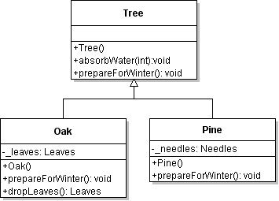
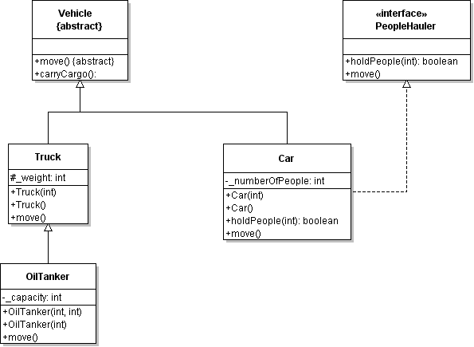
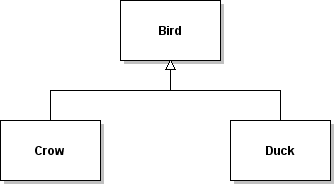
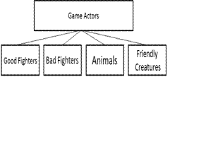

Canterbury QuestionBank
| Field | Value |
|---|---|
| ID | 634193 [created: 2013-06-24 15:09:16, author: patitsas (xelizabeth), avg difficulty: 0.0000] |
| Question |
Which of the following is most appropriate as the missing post-condition?
{
// Moves a robot north-east in our coordinate system
// by one step north and one step east
// PRE: x != NULL, y != NULL
// <missing post-condition>
(*x)++;
(*y)++;
}
|
| A | POST: x != NULL, y != NULL |
| B | POST: x is incremented; y is incremented |
| *C* | POST: x’s pointee is incremented; y’s pointee is incremented |
| D | POST: none |
| Explanation | what x to points to is being updated, not x itself |
| Tags | Contributor_Elizabeth_Patitsas, ATT-Transition-Code_to_CSspeak, Skill-ExplainCode, ATT-Type-How, Difficulty-2-Medium, ExternalDomainReferences-1-Low, Block-Horizontal-3-Funct_ProgGoal, Block-Vertical-2-Block, Language-C, Bloom-2-Comprehension, TopicSimon-Lifetime, TopicSimon-MethodsFuncsProcs, CS2, LinguisticComplexity-2-Medium, CodeLength-lines-00-to-06_Low, Nested-Block-Depth-0-no_ifs_loops, TopicSimon-Testing |
| Field | Value |
|---|---|
| ID | 634920 [created: 2013-06-29 21:35:25, author: edwards@cs.vt.edu (xstephen), avg difficulty: 0.0000] |
| Question |
The Fibonacci sequence is 0, 1, 1, 2, 3, 5, 8, 13 ... Any term (value) of the sequence that follows the first two terms (0 and 1) is equal to the sum of the preceding two terms. Consider the following incomplete method to compute any term of the Fibonacci sequence: public static int fibonacci(int term)
{
int fib1 = 0; // Line 1
int fib2 = 1; // Line 2
int fibn = 0; // Line 3
if (term == 1) // Line 4
{
return fib1; // Line 5
}
if (term == 2) // Line 6
{
return fib2; // Line 7
}
for (__________) // Line 8: loop to the nth term
{
fibn = __________; // Line 9: compute the next term
fib1 = __________; // Line 10: reset the second preceding term
fib2 = __________; // Line 11: reset the immediate preceding term
}
return fibn; // Line 12: return the computed term
}
Choose the best answer to fill in the blank on line 10.
|
| A | fib1 |
| *B* | fib2 |
| C | fibn |
| D | fib1 + fib2 |
| E | fibn - fib2 |
| Explanation | Since each term in the sequence is formed by adding together the previous two terms, the local variables |
| Tags | ATT-Transition-ApplyCode, Contributor_Stephen_Edwards, ATT-Type-How, Difficulty-1-Low, Block-Horizontal-1-Struct_Text, ExternalDomainReferences-2-Medium, Block-Vertical-2-Block, Language-Java, Bloom-2-Comprehension, TopicSimon-LoopsSubsumesOperators, CS1, TopicSimon-MethodsFuncsProcs, CodeLength-lines-06-to-24_Medium, ConceptualComplexity-1-Low, Nested-Block-Depth-1 |
| Field | Value |
|---|---|
| ID | 634190 [created: 2013-06-24 15:01:20, author: patitsas (xelizabeth), avg difficulty: 0.0000] |
| Question |
Dhruv has some recursive code that contains the base case
|
| A | heapsort |
| B | insertion sort |
| *C* | quicksort |
| D | Fibonacci |
| Explanation | Only quicksort is usually implemented with such a base case. |
| Tags | Contributor_Elizabeth_Patitsas, ATT-Transition-Code_to_CSspeak, ATT-Type-How, Difficulty-2-Medium, ExternalDomainReferences-1-Low, Language-C, Bloom-1-Knowledge, LinguisticComplexity-1-Low, CS2, CodeLength-lines-00-to-06_Low, TopicSimon-Recursion, TopicWG-Sorting-NlogN, TopicWG-Sorting-Quadratic |
| Field | Value |
|---|---|
| ID | 634924 [created: 2013-06-29 21:42:35, author: edwards@cs.vt.edu (xstephen), avg difficulty: 0.0000] |
| Question |
The Fibonacci sequence is 0, 1, 1, 2, 3, 5, 8, 13 ... Any term (value) of the sequence that follows the first two terms (0 and 1) is equal to the sum of the preceding two terms. Consider the following incomplete method to compute any term of the Fibonacci sequence: public static int fibonacci(int term)
{
int fib1 = 0; // Line 1
int fib2 = 1; // Line 2
int fibn = 0; // Line 3
if (term == 1) // Line 4
{
return fib1; // Line 5
}
if (term == 2) // Line 6
{
return fib2; // Line 7
}
for (__________) // Line 8: loop to the nth term
{
fibn = __________; // Line 9: compute the next term
fib1 = __________; // Line 10: reset the second preceding term
fib2 = __________; // Line 11: reset the immediate preceding term
}
return fibn; // Line 12: return the computed term
}
Choose the best answer to fill in the blank on line 11. |
| A | fib1 |
| B | fib2 |
| *C* | fibn |
| D | fib1 + fib2 |
| E | fibn - fib1 |
| Explanation | Since each term in the sequence is formed by adding together the previous two terms, the local variables |
| Tags | ATT-Transition-English_to_Code, Contributor_Stephen_Edwards, Skill-WriteCode_MeansChooseOption, ATT-Type-How, Difficulty-1-Low, Block-Horizontal-1-Struct_Text, ExternalDomainReferences-1-Low, Block-Vertical-2-Block, Language-Java, Bloom-2-Comprehension, TopicSimon-LoopsSubsumesOperators, CS1, LinguisticComplexity-1-Low, TopicSimon-MethodsFuncsProcs, CodeLength-lines-06-to-24_Medium, Nested-Block-Depth-1 |
| Field | Value |
|---|---|
| ID | 634926 [created: 2013-06-19 18:07:28, author: xrobert (xrobert), avg difficulty: 0.0000] |
| Question |
Polymorphism is used when different classes we are modeling can do the same thing (i.e. respond to the same method calls), and we don't know which class an object will be at compile time. In Java, this can be implemented using either inheritance or interfaces. Choose the best reason below for choosing inheritance polymorphism |
| A | There is no defined interface that works for all of the classes that I want to allow |
| *B* | The classes are closely related in the inheritance hierarchy; |
| C | The classes are in the same containment hierarchy |
| D | It is the kind of polymorphism that I understand the best |
| Explanation | If the classes are closely related in the inheritance hierarchy it should be possible to have the shared methods in some common superclass, which is close. |
| Tags | Contributor_Robert_McCartney, ATT-Type-Why, Difficulty-2-Medium, Language-Java, CSother, LinguisticComplexity-3-High, TopicSimon-OOconcepts, CodeLength-NotApplicable |
| Field | Value |
|---|---|
| ID | 634927 [created: 2013-06-16 08:13:33, author: kate (xkate), avg difficulty: 0.0000] |
| Question |
Given the following Java code: if (x >= 0) {
System.out.println("1");
} else if (x < 20) {
System.out.println("2");
} else {
System.out.println("3");
}
System.out.println("4");
For what integer values of |
| A | x < 0 |
| *B* | x >= 0 |
| C | x >= 20 |
| D | All values of x |
| E | None of the above. |
| Explanation | The first branch of the conditional statement will print "1" for any x value greater than or equal to 0. |
| Tags | ATT-Transition-ApplyCode, Contributor_Kate_Sanders, Skill-Trace_IncludesExpressions, ATT-Type-How, Difficulty-1-Low, Block-Horizontal-2-Struct_Control, ExternalDomainReferences-1-Low, Block-Vertical-2-Block, Language-Java, Bloom-2-Comprehension, CS1, LinguisticComplexity-1-Low, CodeLength-lines-06-to-24_Medium, ConceptualComplexity-1-Low, TopicSimon-SelectionSubsumesOps, Nested-Block-Depth-1 |
| Field | Value |
|---|---|
| ID | 634928 [created: 2013-06-19 07:28:20, author: crjjrc (xchris), avg difficulty: 0.0000] |
| Question | You are looking for a method getSequence(int n, char c) that returns a String of n characters c. Which of the following will not meet your needs? |
| A | String getSequence(int n, char c) {
String s = "";
for (int i = 0; i < n; ++i) {
s = s + c;
}
return s;
}
|
| B | String getSequence(int n, char c) {
String s = "";
while (n > 0) {
s += c;
}
return s;
}
|
| *C* | String getSequence(int n, char c) {
return n * c;
}
|
| D | String getSequence(int n, char c) {
String s = "";
for (int i = 1; i <= n; ++i) {
s += c;
}
return s;
}
|
| E | String getSequence(int n, char c) {
if (n == 0) {
return "";
} else {
return c + getSequence(n - 1, c);
}
}
|
| Explanation | A char multiplied by an int produces an int, not a String. Example C doesn't even compile. |
| Tags | Contributor_Chris_Johnson, ATT-Transition-CSspeak_to_Code, Skill-WriteCode_MeansChooseOption, ATT-Type-How, Difficulty-1-Low, ExternalDomainReferences-1-Low, Block-Horizontal-3-Funct_ProgGoal, Block-Vertical-2-Block, Language-Java, Bloom-2-Comprehension, TopicSimon-LoopsSubsumesOperators, CS1, LinguisticComplexity-1-Low, CodeLength-lines-06-to-24_Medium, ConceptualComplexity-1-Low, TopicSimon-Strings, Nested-Block-Depth-1 |
| Field | Value |
|---|---|
| ID | 634937 [created: 2013-06-19 17:39:41, author: xrobert (xrobert), avg difficulty: 0.0000] |
| Question |
public class RecursiveMath
...
public int fib (int a) {
if (a < 2)
return a;
else
return fib(a-1) + fib(a-2);
}
...
}
Given the above definition, what is the result of executing the following? RecursiveMath bill = new RecursiveMath();
int x = bill.fib(-1);
|
| *A* | x is set to -1 |
| B | x is set to undefined |
| C | The code does not terminate |
| D | The code cannot be executed, because it won't compile |
| E | None of the above |
| Explanation | Since fib is called with parameter of -1, a gets bound to -1. Since a < 2, the method returns the value of a, -1. |
| Tags | Nested-Block-Depth-2-two-nested, ATT-Transition-ApplyCode, Contributor_Robert_McCartney, Skill-Trace_IncludesExpressions, ATT-Type-How, Difficulty-1-Low, Language-Java, CS1, CodeLength-lines-06-to-24_Medium, TopicSimon-Recursion |
| Field | Value |
|---|---|
| ID | 634941 [created: 2013-06-19 17:34:01, author: xrobert (xrobert), avg difficulty: 0.0000] |
| Question |
public class RecursiveMath
...
public int fib (int a) {
if (a < 2)
return a;
else
return fib(a-1) + fib(a-2);
}
...
}
What is the base case for |
| A | a |
| B | fib(a-1) + fib(a-2); |
| *C* |
|
| D |
|
| E | None of the above |
| Explanation | The base case is the version of the problem that can be solved directly, i.e. without a recursive call. |
| Tags | Nested-Block-Depth-2-two-nested, ATT-Transition-Code_to_CSspeak, Skill-ExplainCode, Contributor_Robert_McCartney, Difficulty-1-Low, Language-Java, CS1, TopicSimon-Recursion |
| Field | Value |
|---|---|
| ID | 634942 [created: 2013-06-24 14:44:28, author: patitsas (xelizabeth), avg difficulty: 0.0000] |
| Question |
What is the difference between
linked_list_node->val = 3;
linked_list_node->next = NULL;
and:
linked_list_node.val = 3;
linked_list_node.next = NULL;
? |
| A | The first needs more memory than the second |
| *B* | The first’s node is stored on the heap; the second’s is stored on the stack |
| C | The second is globally-accessible in the program; the first is locally accessible |
| D | There is no difference |
| Explanation | Dynamic alloc goes on heap; static goes on stack. |
| Tags | Contributor_Elizabeth_Patitsas, ATT-Transition-Code_to_CSspeak, SkillWG-AnalyzeCode, ATT-Type-Why, Difficulty-2-Medium, Block-Horizontal-2-Struct_Control, ExternalDomainReferences-1-Low, Block-Vertical-2-Block, Language-C, Bloom-3-Analysis, TopicSimon-Lifetime, LinguisticComplexity-1-Low, CS2, TopicWG-Recs-Structs-HeteroAggs, TopicWG-Runtime-StorageManagement, CodeLength-lines-00-to-06_Low, TopicSimon-Scope-Visibility, ConceptualComplexity-2-Medium, Nested-Block-Depth-0-no_ifs_loops |
| Field | Value |
|---|---|
| ID | 634943 [created: 2013-06-29 21:14:24, author: patitsas (xelizabeth), avg difficulty: 0.0000] |
| Question |
Consider the code
double capacitance;
};
If given the variable struct capacitor *cap, which of the following will NOT print the address of cap’s capacitance? |
| A | printf("%p\n", cap ) |
| *B* | printf("%p\n", &(cap.capacitance) ) |
| C | printf("%p\n", &((*cap).capacitance) ) |
| D | printf("%p\n", &(cap->capacitance) ) |
| Explanation | C and D are equivalent; A is equivalent to them as capacitance is the first thing stored in the struct. |
| Tags | Contributor_Elizabeth_Patitsas, ATT-Transition-Code_to_CSspeak, Skill-WriteCode_MeansChooseOption, ATT-Type-How, Difficulty-2-Medium, Block-Horizontal-1-Struct_Text, ExternalDomainReferences-1-Low, Block-Vertical-1-Atom, Language-C, TopicSimon-DataTypesAndVariables, Bloom-2-Comprehension, TopicSimon-IO, CS2, LinguisticComplexity-2-Medium, TopicWG-Pointers-ButNotReferences, TopicWG-Recs-Structs-HeteroAggs, CodeLength-lines-00-to-06_Low, ConceptualComplexity-2-Medium, Nested-Block-Depth-0-no_ifs_loops |
| Field | Value |
|---|---|
| ID | 634965 [created: 2013-06-29 21:58:42, author: edwards@cs.vt.edu (xstephen), avg difficulty: 0.0000] |
| Question |
Consider the following partial and incomplete public class SpellChecker
{
private List<String> dictionary; // spelling storage. // Line 1
// assume a constructor exists that correctly instantiates and
// populates the list (i.e. loads the dictionary for the spellchecker)
public boolean spelledCorrectly(String word) // Line 2
{
for (int counter = 0; counter < __________; counter++) // Line 3
{
if (word.equals(__________)) // Line 4
{
return true; // Line 5
}
}
return false; // Line 6
}
public void addWord(String word) // Line 7
{
if (__________) // check word is NOT already in the dictionary // Line 8
{
__________; // add word at end of the dictionary // Line 9
}
}
// other SpellChecker class methods would follow
}
|
| *A* | dictionary.size() |
| B | dictionary.length() |
| C | dictionary.size |
| D | dictionary.length |
| E | dictionary.get(counter) |
| Explanation | The loop in |
| Tags | Nested-Block-Depth-2-two-nested, ATT-Transition-ApplyCode, TopicWG-ADT-List-DefInterfaceUse, Contributor_Stephen_Edwards, Skill-WriteCode_MeansChooseOption, ATT-Type-How, Difficulty-1-Low, Block-Horizontal-1-Struct_Text, ExternalDomainReferences-1-Low, Block-Vertical-2-Block, Language-Java, Bloom-2-Comprehension, TopicSimon-LoopsSubsumesOperators, CS1, LinguisticComplexity-1-Low, TopicSimon-MethodsFuncsProcs, CodeLength-lines-06-to-24_Medium, ConceptualComplexity-1-Low, TopicSimon-Strings |
| Field | Value |
|---|---|
| ID | 634966 [created: 2013-06-29 22:15:18, author: edwards@cs.vt.edu (xstephen), avg difficulty: 0.0000] |
| Question |
Consider the following partial and incomplete public class SpellChecker
{
private List<String> dictionary; // spelling storage. // Line 1
// assume a constructor exists that correctly instantiates and
// populates the list (i.e. loads the dictionary for the spellchecker)
public boolean spelledCorrectly(String word) // Line 2
{
for (int counter = 0; counter < __________; counter++) // Line 3
{
if (word.equals(__________)) // Line 4
{
return true; // Line 5
}
}
return false; // Line 6
}
public void addWord(String word) // Line 7
{
if (__________) // check word is NOT already in the dictionary // Line 8
{
__________; // add word at end of the dictionary // Line 9
}
}
// other SpellChecker class methods would follow
}
|
| *A* | !dictionary.contains(word) |
| B | !dictionary.find(word) |
| C | dictionary[word] == null |
| D | dictionary.get(word) |
| E | !dictionary.get(word) |
| Explanation | To check whether a given value is present in a |
| Tags | Nested-Block-Depth-2-two-nested, ATT-Transition-ApplyCode, TopicWG-ADT-List-DefInterfaceUse, Contributor_Stephen_Edwards, Skill-WriteCode_MeansChooseOption, ATT-Type-How, Difficulty-1-Low, Block-Horizontal-1-Struct_Text, ExternalDomainReferences-1-Low, Block-Vertical-2-Block, Language-Java, Bloom-2-Comprehension, TopicSimon-LoopsSubsumesOperators, CS1, LinguisticComplexity-1-Low, TopicSimon-MethodsFuncsProcs, CodeLength-lines-06-to-24_Medium, ConceptualComplexity-1-Low, TopicSimon-Strings |
| Field | Value |
|---|---|
| ID | 634996 [created: 2013-06-19 07:10:17, author: xrobert (xrobert), avg difficulty: 0.0000] |
| Question |
1. public BallPanel extends javax.swing.JPanel {
2. private Ball[] _balls;
3. public BallPanel(int numberOfBalls){
4. _balls = new Ball[numberOfBalls];
5. for (int i=0;i<_balls.length;i++)
6. _balls[i] = new Ball();
7. }
8. public void ballCopy () {
9. Ball[] temp = new Ball[2 * _balls.length];
10. for (int j=0; j< _balls.length; j++0)
11. _temp[j] = _balls[j];
12. _balls = temp;
13. }
13. ...
After executing BallPanel myPanel = new BallPanel(10);
_myPanel.ballCopy();
Which of the following is true? |
| A | The array |
| B | The elements of |
| *C* |
|
| D | _balls.length == 10 in myPanel |
| E | None of the above |
| Explanation | C is true. When you call ballCopy, it instantiates an array that is twice as large as _balls, which had length 10, then sets _balls to that new array. |
| Tags | Nested-Block-Depth-2-two-nested, ATT-Transition-Code_to_English, Skill-ExplainCode, Contributor_Robert_McCartney, ATT-Type-How, Difficulty-2-Medium, TopicSimon-Arrays, TopicSimon-Assignment, Language-Java, Bloom-4-Application, CS1, CodeLength-lines-06-to-24_Medium |
| Field | Value |
|---|---|
| ID | 634998 [created: 2013-06-26 06:08:52, author: mikeyg (xmikey), avg difficulty: 0.0000] |
| Question |
Consider the following method and indicate what value is displayed from the initial call statement from another method: System.out.println(Ackermann(2,3)); public int Ackermann(int n, int m) { |
| A | 4 |
| *B* | 9 |
| C | 5 |
| D | 7 |
| E | 29 |
| Explanation | Ackermann's function is one of the earliest hyper-exponential recursive functions. The key to obtaining the correct answer is in keeping which parameter is which, straight. Maybe, rename them as "red" and "blue" (instead of n and m) to reduce confusion. |
| Tags | Nested-Block-Depth-4-more, Contributor_Michael_Goldweber, ATT-Transition-Code_to_English, Skill-Trace_IncludesExpressions, ATT-Type-How, Difficulty-3-High, Block-Horizontal-2-Struct_Control, ExternalDomainReferences-1-Low, Block-Vertical-4-Macro-Structure, Language-Java, Bloom-3-Analysis, CS2, LinguisticComplexity-3-High, CodeLength-lines-06-to-24_Medium, TopicSimon-Recursion |
| Field | Value |
|---|---|
| ID | 634999 [created: 2013-06-29 22:46:07, author: patitsas (xelizabeth), avg difficulty: 0.0000] |
| Question | Which of the following algorithms use a divide-and-conquer strategy? (Circle all that apply.) |
| *A* | Merge sort |
| B | Insertion sort |
| C | Binary search |
| D | Linear search |
| Explanation | A and C are correct. |
| Tags | ATT-Transition-ApplyCSspeak, Contributor_Elizabeth_Patitsas, ATT-Type-How, Difficulty-1-Low, ExternalDomainReferences-1-Low, Bloom-1-Knowledge, Language-none-none-none, LinguisticComplexity-1-Low, CS2, CodeLength-NotApplicable, MultipleAnswers-See-Explanation, TopicWG-Searching-Binary, TopicWG-Searching-Linear, TopicWG-Sorting-NlogN, TopicWG-Sorting-Quadratic, ConceptualComplexity-2-Medium |
| Field | Value |
|---|---|
| ID | 635000 [created: 2013-06-19 06:55:07, author: xrobert (xrobert), avg difficulty: 0.0000] |
| Question |
1. public BallPanel extends javax.swing.JPanel {
2. private Ball[] _balls;
3. private Ball[] _moreBalls;
4. public BallPanel(int numberOfBalls){
5. _balls = new Ball[numberOfBalls];
6. for (int i=0;i<_balls.length;i++)
7. _balls[i] = new Ball();
8. _moreBalls = _balls;
9. }
10. public Ball[] getBalls(){
11. return _balls;
12. }
13. public Ball[] getMoreBalls(){
14. return _moreBalls;
15. }
16. ...
Which of the following statements is true, after executing the following code (assuming Ball has a constructor that takes a Color argument). BallPanel myPanel = new BallPanel(5);
myPanel.getMoreBalls()[0] = new Ball(java.awt.Color.pink);
? |
| A | The array |
| B | The array _moreBalls in myPanel is unchanged |
| C | The first element of |
| *D* | myPanel.getBalls()[0] == myPanel.getMoreBalls()[0] |
| E | The code will not execute because the second line has a syntax error. |
| Explanation | Because of line 9, both _balls and _moreBalls refer to the same array. Therefore, if I re-assign an element in one array, the change shows up under the other. Moreover, since it is really only one array the elements are identical, so == will be true in this case. |
| Tags | ATT-Transition-Code_to_English, Skill-ExplainCode, Contributor_Robert_McCartney, ATT-Type-How, SkillWG-AnalyzeCode, Difficulty-3-High, TopicSimon-Arrays, TopicSimon-Assignment, Language-Java, Bloom-3-Analysis, CS1, CodeLength-lines-06-to-24_Medium, Nested-Block-Depth-1 |
| Field | Value |
|---|---|
| ID | 635001 [created: 2013-06-26 05:57:33, author: mikeyg (xmikey), avg difficulty: 0.0000] |
| Question |
Consider the following function. What does it return?
|
| A | True, regardless of the value of inValue |
| *B* | False, regardless of the value of inValue |
| C | It depends. If inValue is assigned the value "mikeyg," then True; otherwise False. |
| Explanation | The == (equality operator) for objects (strings are objects in Java) returns True when both operands refer to the same object. In this case, there are two distinct objects, who might contain the same value ("mikeyg"). |
| Tags | ATT-Transition-Code_to_CSspeak, Contributor_Michael_Goldweber, ATT-Type-How, Difficulty-1-Low, SkillWG-AnalyzeCode, Block-Horizontal-2-Struct_Control, ExternalDomainReferences-1-Low, Block-Vertical-2-Block, Language-Java, Bloom-2-Comprehension, CS1, LinguisticComplexity-1-Low, CodeLength-lines-00-to-06_Low, TopicSimon-Strings, Nested-Block-Depth-0-no_ifs_loops |
| Field | Value |
|---|---|
| ID | 634144 [created: 2013-06-24 10:02:31, author: patitsas (xelizabeth), avg difficulty: 0.0000] |
| Question | Which of the following pairs of statements has two statements that are NOT equivalent? |
| A |
|
| B |
|
| C |
|
| *D* |
|
| Explanation | *(arr + sizeof) != *(arr) + sizeof |
| Tags | Contributor_Elizabeth_Patitsas, ATT-Transition-CSspeak_to_Code, Skill-Trace_IncludesExpressions, ATT-Type-How, Difficulty-2-Medium, Block-Horizontal-1-Struct_Text, ExternalDomainReferences-1-Low, TopicSimon-ArithmeticOperators, TopicSimon-Arrays, Block-Vertical-1-Atom, Language-C, TopicSimon-DataTypesAndVariables, Bloom-1-Knowledge, CS2, LinguisticComplexity-2-Medium, TopicWG-Pointers-ButNotReferences, CodeLength-lines-00-to-06_Low, ConceptualComplexity-2-Medium, Nested-Block-Depth-0-no_ifs_loops |
| Field | Value |
|---|---|
| ID | 635003 [created: 2013-06-29 22:52:47, author: edwards@cs.vt.edu (xstephen), avg difficulty: 0.0000] |
| Question |
The following method, called maxRow(), is intended to take one parameter: a List where the elements are Lists of Integer objects. You can think of this parameter as a matrix--a list of rows, where each row is a list of "cells" (plain integers). The method sums up the integers in each row (each inner list), and returns the index (row number) of the row with the largest row sum. Choose the best choice to fill in the blank on Line 3 so that this method works as intended: public static int maxRow(List<List<Integer>> matrix)
{
int maxVec = -1; // Line 1
int maxSum = Integer.MIN_VALUE; // Line 2
for (int row = 0; row < __________; row++) // Line 3
{
int sum = 0; // Line 4
for (int col = 0; col < __________; col++) // Line 5
{
sum = sum + __________; // Line 6
}
if (___________) // Line 7
{
maxSum = __________; // Line 8
maxVec = __________; // Line 9
}
}
return maxVec; // Line 10
}
|
| *A* | matrix.size() |
| B | matrix[0[].size() |
| C | matrix[row][col] |
| D | matrix.length |
| E | maxVec |
| Explanation | The blank on line three is the upper limit for the row count, controlling how many times the outer loop repeats. This should correspond to the number of rows in the |
| Tags | Nested-Block-Depth-2-two-nested, ATT-Transition-ApplyCode, TopicWG-ADT-List-DefInterfaceUse, Contributor_Stephen_Edwards, Skill-WriteCode_MeansChooseOption, ATT-Type-How, Difficulty-1-Low, Block-Horizontal-1-Struct_Text, ExternalDomainReferences-1-Low, Block-Vertical-2-Block, Language-Java, Bloom-3-Analysis, TopicSimon-LoopsSubsumesOperators, CS1, LinguisticComplexity-1-Low, TopicSimon-MethodsFuncsProcs, CodeLength-lines-06-to-24_Medium |
| Field | Value |
|---|---|
| ID | 635007 [created: 2013-06-26 05:31:41, author: mikeyg (xmikey), avg difficulty: 0.0000] |
| Question | Which of the following run-times is NOT characteristic of a feasible (or tractable) algorithm? |
| A | O(n2) |
| B | O(nlog2 n) |
| *C* | O(2n) |
| D | O(n3) |
| E | O(log2 n) |
| Explanation | Feasable (or tractable) algorithms are one whose time is expressed as a polynomial in terms of the input set size n. O(2n) is exponential in n. |
| Tags | ATT-Transition-ApplyCSspeak, Contributor_Michael_Goldweber, Skill-PureKnowledgeRecall, Difficulty-1-Low, ATT-Type-Why, TopicSimon-AlgorithmComplex-BigO, ExternalDomainReferences-1-Low, Bloom-2-Comprehension, Language-none-none-none, CS1, LinguisticComplexity-1-Low, CodeLength-NotApplicable, Nested-Block-Depth-0-no_ifs_loops |
| Field | Value |
|---|---|
| ID | 634143 [created: 2013-06-24 09:58:27, author: patitsas (xelizabeth), avg difficulty: 0.0000] |
| Question |
Consider the code
p = &i;
q = p;
*p = 5;
|
| A | printf("The value is %d", &i); |
| B | printf("The value is %d", p); |
| *C* | printf("The value is %d", *q); |
| D | printf("The value is %d", *i); |
| Explanation | q and p are sharing |
| Tags | Contributor_Elizabeth_Patitsas, ATT-Transition-CSspeak_to_Code, Skill-Trace_IncludesExpressions, ATT-Type-How, Difficulty-2-Medium, Block-Horizontal-1-Struct_Text, ExternalDomainReferences-1-Low, TopicSimon-Assignment, Block-Vertical-2-Block, Language-C, TopicSimon-DataTypesAndVariables, Bloom-2-Comprehension, LinguisticComplexity-1-Low, CS2, TopicWG-Pointers-ButNotReferences, CodeLength-lines-00-to-06_Low, Nested-Block-Depth-0-no_ifs_loops |
| Field | Value |
|---|---|
| ID | 634140 [created: 2013-06-24 09:53:42, author: patitsas (xelizabeth), avg difficulty: 0.0000] |
| Question |
Consider the code
i = 3;
q = p;
q = &i;
printf("The value of p is %d which points to %d.\n", p, *p);
|
| A | The value of p is 0x3eee198e1e1 which points to 3. |
| B | The value of p is 0 which points to 0. |
| C | The value of p is -29389112111 which points to 3. |
| *D* | Segmentation fault |
| Explanation | p was never assigned! While p and q are sharing for a while that does not mean they are the same. |
| Tags | Contributor_Elizabeth_Patitsas, ATT-Transition-Code_to_CSspeak, Skill-Trace_IncludesExpressions, ATT-Type-How, Difficulty-3-High, Block-Horizontal-2-Struct_Control, ExternalDomainReferences-1-Low, TopicSimon-Assignment, Block-Vertical-2-Block, Language-C, TopicSimon-DataTypesAndVariables, Bloom-2-Comprehension, TopicSimon-IO, LinguisticComplexity-1-Low, CS2, TopicWG-Pointers-ButNotReferences, CodeLength-lines-00-to-06_Low, ConceptualComplexity-2-Medium, Nested-Block-Depth-0-no_ifs_loops |
| Field | Value |
|---|---|
| ID | 635009 [created: 2013-06-26 03:57:19, author: mikeyg (xmikey), avg difficulty: 0.0000] |
| Question |
Consider the following predicate (boolean) accessor function: def blockedWithinOneMove(self):
|
| A | If the robot is blocked, after moving forward, this function incorrectly returns True. |
| B | If the robot is not blocked, after moving forward, this function incorrectly returns False. |
| C | This function returns True when is should return False, and returns False when it should return True. |
| *D* | In some cases, the preconditions do not match the postconditions; i.e. the state has changed. |
| E | The robot moves, but does not change reverse direction. |
| Explanation | Accessor functions need to guarantee that the program state does not change. The robot moves forward to check for a wall, but fails to return to its starting location - which is necessary since this is an accessor method. |
| Tags | ATT-Transition-Code_to_CSspeak, Contributor_Michael_Goldweber, ATT-Type-How, SkillWG-AnalyzeCode, Difficulty-2-Medium, Block-Horizontal-2-Struct_Control, ExternalDomainReferences-1-Low, Block-Vertical-2-Block, Bloom-3-Analysis, Language-Python, CS1, LinguisticComplexity-1-Low, CodeLength-lines-06-to-24_Medium, Nested-Block-Depth-1 |
| Field | Value |
|---|---|
| ID | 635010 [created: 2013-06-29 21:02:15, author: patitsas (xelizabeth), avg difficulty: 0.0000] |
| Question |
What value will this code print out on a 64-bit Linux machine with gcc? int main
{
int key = get_key("zflsbi-k#gk!2*8jc5r:/bb&fc:j\x42\x20\x46\x4e");
printf("%d\n", key);
}
int get_key(char *bar)
{
assert(bar);
char c[28];
memcpy(c, bar, strlen(bar));
return key;
}
|
| A | The code will not run; the asserts will trigger |
| B | 10 |
| C | 1109411406 |
| *D* | 1313218626 |
| E | 3831759396 |
| Explanation | There's a stack buffer overflow due to the memcpy, so the method will return 0x4e462042 (Little Endian); in decimal that is 1313218626. |
| Tags | Contributor_Elizabeth_Patitsas, ATT-Transition-Code_to_CSspeak, Skill-TestProgram, ATT-Type-How, Difficulty-3-High, Block-Horizontal-2-Struct_Control, ExternalDomainReferences-1-Low, TopicSimon-Assignment, Block-Vertical-2-Block, Language-C, Bloom-3-Analysis, TopicWG-Numeric-Int-Representatio, TopicWG-Numeric-Int-Truncation, LinguisticComplexity-1-Low, CS2, TopicWG-Runtime-StorageManagement, CodeLength-lines-06-to-24_Medium, TopicSimon-Scope-Visibility, TopicSimon-Strings, Nested-Block-Depth-0-no_ifs_loops |
| Field | Value |
|---|---|
| ID | 635011 [created: 2013-06-19 06:21:18, author: xrobert (xrobert), avg difficulty: 0.0000] |
| Question |
1. import java.util.ArrayList;
2. public BallPanel extends javax.swing.JPanel {
3. private Ball[] _balls;
4. private ArrayList <Ball> _moreBalls;
5. public BallPanel(){
6. _balls = new Ball[20];
7. _moreBalls = new ArrayList<Ball>();
8. for (int i=0;i<10;i++) {
9. _balls[i] = new Ball();
10. _moreBalls.add(_balls[i]);
11. }
12. }
13. ...
After line 11, what are the values of |
| A | 0, 0 |
| B | 10, 10 |
| C | 20, 20 |
| D | 10, 20 |
| *E* | 20, 10 |
| Explanation |
_balls.length is set to 20 when the array is instantiated (in line 6) and is independent of the array contents. _moreBalls.size() indicates the number of values stored in the ArrayList, which is 10 from the 10 adds in the loop.
|
| Tags | ATT-Transition-Code_to_English, Skill-ExplainCode, Contributor_Robert_McCartney, Difficulty-1-Low, TopicSimon-Arrays, TopicSimon-CollectionsExceptArray, Language-Java, CS1, CodeLength-lines-06-to-24_Medium |
| Field | Value |
|---|---|
| ID | 634995 [created: 2013-06-29 22:28:37, author: edwards@cs.vt.edu (xstephen), avg difficulty: 0.0000] |
| Question |
Consider this method skeleton for /**
* Returns the number of times the digit d occurs in the decimal
* representation of n.
* @param n The number to consider (must be non-negative).
* @param d The digit to look for (must be 0-9).
* Returns the number of times d occurs in the printed representation
* of n.
*/
public int findDigit(int n, int d) // Line 1
{
int count = 0; // Line 2
if (__________) // Line 3
{
__________; // Line 4
}
while (n > 0) // Line 5
{
if (n % 10 == d) // Line 6
{
count++; // Line 7
}
return 1; // Line 8
}
return count; // Line 9
}
|
| A | d == 0 |
| B | n == 0 |
| *C* | n == 0 && d == 0 |
| D | n < d |
| E | n = n - d |
| Explanation | The blank on line 3 checks a special case where the loop is never needed--when both the |
| Tags | Nested-Block-Depth-2-two-nested, ATT-Transition-ApplyCode, Contributor_Stephen_Edwards, Skill-WriteCode_MeansChooseOption, ATT-Type-How, Difficulty-1-Low, Block-Horizontal-1-Struct_Text, ExternalDomainReferences-1-Low, Block-Vertical-2-Block, Language-Java, Bloom-3-Analysis, TopicSimon-LoopsSubsumesOperators, CS1, LinguisticComplexity-1-Low, TopicSimon-MethodsFuncsProcs, CodeLength-lines-06-to-24_Medium, ConceptualComplexity-1-Low |
| Field | Value |
|---|---|
| ID | 634993 [created: 2013-06-29 22:35:40, author: edwards@cs.vt.edu (xstephen), avg difficulty: 0.0000] |
| Question |
Consider this method skeleton for /**
* Returns the number of times the digit d occurs in the decimal
* representation of n.
* @param n The number to consider (must be non-negative).
* @param d The digit to look for (must be 0-9).
* Returns the number of times d occurs in the printed representation
* of n.
*/
public int findDigit(int n, int d) // Line 1
{
int count = 0; // Line 2
if (n == 0 && d == 0) // Line 3
{
__________; // Line 4
}
while (n > 0) // Line 5
{
if (n % 10 == d) // Line 6
{
count++; // Line 7
}
__________; // Line 8
}
return count; // Line 9
}
|
| A | return 0; |
| *B* | return 1; |
| C | return n; |
| D | return d; |
| E | return count; |
| Explanation | The test on line 3 checks a special case where the loop is never needed--when both the |
| Tags | Nested-Block-Depth-2-two-nested, ATT-Transition-ApplyCode, Contributor_Stephen_Edwards, Skill-WriteCode_MeansChooseOption, ATT-Type-How, Difficulty-1-Low, Block-Horizontal-1-Struct_Text, ExternalDomainReferences-1-Low, Block-Vertical-2-Block, Language-Java, Bloom-3-Analysis, TopicSimon-LoopsSubsumesOperators, CS1, LinguisticComplexity-1-Low, TopicSimon-MethodsFuncsProcs, CodeLength-lines-06-to-24_Medium, ConceptualComplexity-1-Low |
| Field | Value |
|---|---|
| ID | 634967 [created: 2013-06-27 04:30:32, author: mikeyg (xmikey), avg difficulty: 0.0000] |
| Question |
What algorithm does mystery implement when passed a list of values as its argument? def helper (listOfValues, start): def mystery (listOfValues): leftEdge = leftEdge + 1 return (listOfValues) |
| A | List Reverser |
| B | Insertion Sort |
| C | Quicksort |
| *D* | Selection Sort |
| E | Bubble Sort |
| Explanation | Helper is an implementation of Find Largest. By repeatedly invoking Find Largest, the mystery algorithm implements selection sort |
| Tags | Nested-Block-Depth-3-three-nested, ATT-Transition-Code_to_CSspeak, Contributor_Michael_Goldweber, ATT-Type-How, SkillWG-AnalyzeCode, Difficulty-2-Medium, ExternalDomainReferences-1-Low, Block-Horizontal-3-Funct_ProgGoal, TopicSimon-Arrays, Block-Vertical-4-Macro-Structure, Bloom-3-Analysis, Language-Python, CS1, LinguisticComplexity-1-Low, CodeLength-lines-06-to-24_Medium, TopicWG-Sorting-Quadratic |
| Field | Value |
|---|---|
| ID | 634969 [created: 2013-06-11 10:10:26, author: kate (xkate), avg difficulty: 0.0000] |
| Question |
Consider the following interface definition: public interface Mover {
public int getX();
public int getY();
public void setLocation(int x, int y);
}
Choose the best answer to describe the following implementation of that interface: public class CartoonCharacter implements Mover{
private int x, y;
public int getX() {return this.x;}
public int getY() {return this.y;}
}
|
| A | The class correctly implements the |
| B | The class does not correctly implement the |
| C | The class does not correctly implement the |
| *D* | The class does not correctly implement the |
| E | Both B and C. |
| Explanation |
To implement a Java interface, a class must define all the methods required by the interface (or declare itself abstract). Note: There is no appropriate topic for this question. Suggestion: TopicSimon-Interface-Java. |
| Tags | Contributor_Kate_Sanders, Skill-DebugCode, ATT-Transition-Code_to_CSspeak, Difficulty-1-Low, ATT-Type-Why, TopicSimon-AAA-XX-ChooseUpToThree, Block-Horizontal-1-Struct_Text, ExternalDomainReferences-1-Low, Block-Vertical-3-Relations, Language-Java, Bloom-3-Analysis, CS1, LinguisticComplexity-1-Low, CodeLength-lines-06-to-24_Medium, ConceptualComplexity-1-Low, Nested-Block-Depth-0-no_ifs_loops |
| Field | Value |
|---|---|
| ID | 634974 [created: 2013-06-27 03:48:41, author: mikeyg (xmikey), avg difficulty: 0.0000] |
| Question |
What does the following Python method do? Note: lov stands for list of values. def foo (lov): |
| A | Implements the sequential search algorithm. |
| *B* | Determines if the input list is sorted in ascending order. |
| C | Implements the selection sort algorithm. |
| D | Determines if the input list is sorted in descended order |
| E | None of the above |
| Explanation | Flag is set to true and when two adjacent list items are found to be out of place, with respect to a non-decreasing sorted order, flag is set to false. |
| Tags | Nested-Block-Depth-2-two-nested, Contributor_Michael_Goldweber, ATT-Transition-Code_to_English, ATT-Type-How, SkillWG-AnalyzeCode, Difficulty-2-Medium, ExternalDomainReferences-1-Low, Block-Horizontal-3-Funct_ProgGoal, TopicSimon-Arrays, Block-Vertical-4-Macro-Structure, Bloom-3-Analysis, Language-Python, CS1, LinguisticComplexity-1-Low, CodeLength-lines-06-to-24_Medium |
| Field | Value |
|---|---|
| ID | 634977 [created: 2013-06-27 03:38:26, author: mikeyg (xmikey), avg difficulty: 0.0000] |
| Question |
Consider the following class definition: public class Mystery { private ArrayList<Stuff> myStuff;
... code deleted... return myStuff[i]; public void foo2 (int id) { ... code deleted... public Stuff foo3 (int id) { } // End of class Mystery True or False: "i" should be upgraded to an instance variable. |
| A | True |
| *B* | False |
| Explanation | False. Instance variables should only be declared for persistent data. "i" is a local variable which contains no persistent data. Even though it is used in ALL the class's methods, that is not justification to make it an instance variable. |
| Tags | ATT-Transition-Code_to_CSspeak, Contributor_Michael_Goldweber, ATT-Type-Why, Difficulty-2-Medium, Block-Horizontal-1-Struct_Text, ExternalDomainReferences-1-Low, Block-Vertical-3-Relations, Language-Java, Bloom-3-Analysis, CS1, LinguisticComplexity-1-Low, TopicSimon-OOconcepts, CodeLength-lines-06-to-24_Medium, Nested-Block-Depth-0-no_ifs_loops |
| Field | Value |
|---|---|
| ID | 634981 [created: 2013-06-22 07:37:04, author: jspacco (xjaime), avg difficulty: 0.0000] |
| Question |
Consider the following Java implementation of a Stack: public class Stack<E> extends LinkedList<E>{
private int size=0;
public int size(){
return size;
}
public void push(E e){
add(e);
size+=1;
}
public E pop() {
size-=1;
return removeLast();
}
}
What does the following code output? Stack<Integer> q=new Stack<Integer>();
q.push(10);
q.push(20);
q.clear(); // clear() is inherited from LinkedList
System.out.println(q.size());
|
| A | 0 |
| *B* | 2 |
| C | throws a Runtime exception |
| D | throws a checked exception (i.e. this code won't compile unless the code is surrounded by a try-catch block, or the method it is located inside declares that it throws the exception) |
| Explanation |
This is a classic case of using extends improperly. Remember that inheritance in Java (or any other Object-oriented language) creates an IS-A relationship. But, a Stack IS NOT a LinkedList, because there are things you can do to a LinkedList that you cannot do to a Stack, such as invoke clear(). Another way to think about this is that inheritance inherits ALL public methods, and allows those methods to be used by the subclass. For this Stack class, all of those inherited methods, such as clear(), can be called to change the state of the instance, but they don't know to pay attention to the size variable. |
| Tags | ATT-Transition-ApplyCode, Contributor_Jaime_Spacco, Skill-Trace_IncludesExpressions, ATT-Type-How, Difficulty-2-Medium, TopicWG-ADT-Stack-DefInterfaceUse, Block-Horizontal-1-Struct_Text, ExternalDomainReferences-1-Low, TopicSimon-CollectionsExceptArray, Block-Vertical-4-Macro-Structure, Language-Java, Bloom-3-Analysis, LinguisticComplexity-1-Low, CS2, TopicSimon-OOconcepts, CodeLength-lines-25-or-more_High, ConceptualComplexity-2-Medium, Nested-Block-Depth-1 |
| Field | Value |
|---|---|
| ID | 634983 [created: 2013-06-26 08:31:57, author: mikeyg (xmikey), avg difficulty: 0.0000] |
| Question | The All-Pairs list programming pattern typically runs in time? |
| *A* | O(n2) |
| B | O(n) |
| C | O(n log2 n) |
| D | O(1) |
| E | O(2n) |
| Explanation | The All-Pairs programming pattern typically compares each element in a list to each other element in the list. Hence the first element is compared against n-1 other values. The second element is compared against n-2 other values, etc. Hence one gets a quadratic run time. |
| Tags | Nested-Block-Depth-3-three-nested, ATT-Transition-Code_to_CSspeak, Contributor_Michael_Goldweber, Skill-PureKnowledgeRecall, ATT-Type-How, Difficulty-2-Medium, Block-Horizontal-2-Struct_Control, TopicSimon-Arrays, Block-Vertical-4-Macro-Structure, Bloom-3-Analysis, Language-none-none-none, CS1, LinguisticComplexity-1-Low, CodeLength-NotApplicable |
| Field | Value |
|---|---|
| ID | 634985 [created: 2013-06-26 08:15:04, author: mikeyg (xmikey), avg difficulty: 0.0000] |
| Question | C++ uses |
| A | call by name |
| B | call by reference |
| C | call by value |
| D | call by value-return |
| *E* | call by value AND call by reference |
| Explanation | C++ defaults to call by value, but allows for special sytax to force call-reference. |
| Tags | ATT-Transition-ApplyCSspeak, Contributor_Michael_Goldweber, ATT-Type-How, Difficulty-2-Medium, Block-Horizontal-2-Struct_Control, ExternalDomainReferences-1-Low, Block-Vertical-3-Relations, Language-Cplusplus, Bloom-2-Comprehension, CS1, LinguisticComplexity-1-Low, TopicSimon-MethodsFuncsProcs, CodeLength-NotApplicable, Nested-Block-Depth-0-no_ifs_loops |
| Field | Value |
|---|---|
| ID | 634986 [created: 2013-06-21 19:04:16, author: jspacco (xjaime), avg difficulty: 0.0000] |
| Question |
Assume M and N are positive integers. What does the following code print? int sum=0;
for (int j=0; j<M; j++) {
for (int i=0; i<N; i++) {
sum += 1;
}
}
System.out.println(sum);
|
| A | M+N |
| *B* | M*N |
| C | MN |
| D | 0 |
| E | none of the above |
| Explanation | For positive integers M and N, this prints M*N |
| Tags | Nested-Block-Depth-2-two-nested, ATT-Transition-ApplyCode, Contributor_Jaime_Spacco, ATT-Type-How, Difficulty-1-Low, Block-Horizontal-2-Struct_Control, ExternalDomainReferences-1-Low, Block-Vertical-2-Block, Language-Java, Bloom-3-Analysis, TopicSimon-LoopsSubsumesOperators, CS1, LinguisticComplexity-1-Low, CodeLength-lines-06-to-24_Medium, ConceptualComplexity-1-Low |
| Field | Value |
|---|---|
| ID | 634987 [created: 2013-06-26 08:09:56, author: mikeyg (xmikey), avg difficulty: 0.0000] |
| Question |
Consider the following: public void foo (int x) { ... } What is x? |
| A | A global variable. |
| B | A local variable. |
| C | The actual parameter. |
| *D* | The formal parameter. |
| E | An instance variable. |
| Explanation | When invoking a method, the invokation contains the actual parameters, while the variables defined in the method signature define the formal parameters. |
| Tags | ATT-Transition-Code_to_CSspeak, Contributor_Michael_Goldweber, ATT-Type-How, Difficulty-1-Low, Block-Horizontal-1-Struct_Text, ExternalDomainReferences-1-Low, Block-Vertical-1-Atom, Bloom-1-Knowledge, Language-Java, CS1, LinguisticComplexity-1-Low, TopicSimon-MethodsFuncsProcs, CodeLength-lines-00-to-06_Low, Nested-Block-Depth-0-no_ifs_loops |
| Field | Value |
|---|---|
| ID | 634988 [created: 2013-06-26 08:05:17, author: mikeyg (xmikey), avg difficulty: 0.0000] |
| Question | Java uses: |
| A | call by reference |
| *B* | call by value |
| C | call by name |
| D | call by value-return |
| Explanation | Java uses call by value. If the given parameter is an object, which is really a reference, then under call by value, the formal parameter is really just an alias (additional reference) to the actual parameter object. |
| Tags | ATT-Transition-ApplyCSspeak, Contributor_Michael_Goldweber, Skill-PureKnowledgeRecall, ATT-Type-How, Difficulty-2-Medium, Block-Horizontal-2-Struct_Control, ExternalDomainReferences-1-Low, Block-Vertical-3-Relations, Language-Java, Bloom-2-Comprehension, CS1, LinguisticComplexity-1-Low, TopicSimon-MethodsFuncsProcs, CodeLength-NotApplicable |
| Field | Value |
|---|---|
| ID | 634990 [created: 2013-06-19 07:23:22, author: xrobert (xrobert), avg difficulty: 0.0000] |
| Question |
1. public BallPanel extends javax.swing.JPanel {
2. private Ball[] _balls;
3. public BallPanel(int numberOfBalls){
4. _balls = new Ball[numberOfBalls];
5. for (int i=0;i<_balls.length;i++)
6. _balls[i] = new Ball();
7. }
8. public void ballCopy () {
9. Ball[] temp = new Ball[2 * _balls.length];
10. for (int j=0; j< _balls.length; j++0)
11. _temp[j] = _balls[j];
12. _balls = temp;
13. }
13. ...
What is the purpose of the |
| A | It allows the user to copy a |
| B | It copies data in the |
| *C* | It increases the capacity of the |
| D | It makes 2 copies of the elements in the |
| E | It swaps the data in the |
| Explanation | It doubles the length of the _balls array. It works by 1) instantiating temp, an array twice as large as _balls, 2) copying the data in _balls to the first half of temp, and 3) reassigning _balls to be temp. Useful if you want to have an array that can grow bigger when it gets full. |
| Tags | ATT-Transition-Code_to_English, Skill-ExplainCode, Contributor_Robert_McCartney, ATT-Type-How, ATT-Type-Why, Difficulty-2-Medium, TopicSimon-Arrays, TopicSimon-Assignment, Language-Java, Bloom-4-Application, TopicSimon-LoopsSubsumesOperators, CS1, CodeLength-lines-06-to-24_Medium |
| Field | Value |
|---|---|
| ID | 634991 [created: 2013-06-29 22:41:31, author: edwards@cs.vt.edu (xstephen), avg difficulty: 0.0000] |
| Question |
Consider this method skeleton for /**
* Returns the number of times the digit d occurs in the decimal
* representation of n.
* @param n The number to consider (must be non-negative).
* @param d The digit to look for (must be 0-9).
* Returns the number of times d occurs in the printed representation
* of n.
*/
public int findDigit(int n, int d) // Line 1
{
int count = 0; // Line 2
if (__________) // Line 3
{
__________; // Line 4
}
while (n > 0) // Line 5
{
if (n % 10 == d) // Line 6
{
count++; // Line 7
}
__________; // Line 8
}
return count; // Line 9
}
|
| A | n = n % 10; |
| B | n = n - d; |
| C | n = n + d; |
| D | n = Integer.toString(n).substring(1); |
| *E* | n = n / 10; |
| Explanation | The loop in this method traverses through the digits in the specified number |
| Tags | Nested-Block-Depth-2-two-nested, ATT-Transition-ApplyCode, Contributor_Stephen_Edwards, Skill-WriteCode_MeansChooseOption, ATT-Type-How, Difficulty-1-Low, Block-Horizontal-1-Struct_Text, ExternalDomainReferences-1-Low, Block-Vertical-2-Block, Language-Java, Bloom-3-Analysis, TopicWG-Numeric-Int-Range, TopicSimon-LoopsSubsumesOperators, CS1, LinguisticComplexity-1-Low, TopicSimon-MethodsFuncsProcs, CodeLength-lines-06-to-24_Medium, ConceptualComplexity-1-Low |
| Field | Value |
|---|---|
| ID | 634992 [created: 2013-06-26 07:59:46, author: mikeyg (xmikey), avg difficulty: 0.0000] |
| Question |
Consider the following: When foo is executed, what is printed out? public void foo () { int x = 42; int y = 24; mystery (x, y); System.out.println (x + " " + y); } public void mystery (int var1, int var2) { |
| *A* | 42 24 |
| B | 24 42 |
| Explanation | Java is a pass-by-VALUE language. Hence mystery, does not accomplish the desired swapping of values. |
| Tags | ATT-Transition-Code_to_CSspeak, Contributor_Michael_Goldweber, Skill-Trace_IncludesExpressions, ATT-Type-How, Difficulty-2-Medium, Block-Horizontal-2-Struct_Control, ExternalDomainReferences-1-Low, Block-Vertical-2-Block, Language-Java, Bloom-2-Comprehension, CS1, TopicSimon-MethodsFuncsProcs, CodeLength-lines-06-to-24_Medium, Nested-Block-Depth-0-no_ifs_loops |
| Field | Value |
|---|---|
| ID | 634131 [created: 2013-06-24 08:11:54, author: patitsas (xelizabeth), avg difficulty: 0.0000] |
| Question |
Yuchi has the following code: #DEFINE N 500
---- (other code skipped) ----
int arr[N][N]; int i; int j;
for(i = 0; i < N; i++)
{
for(j = 0; j < N; j++)
{
arr[i][j] = i + j;
}
}
When he changes N to 500,000, his code crashes. Why? |
| A | There is a memory leak in the code |
| *B* |
|
| C |
|
| D | With N that large, there will be at least one integer overflow in the code |
| Explanation | arr is stored on the stack as it was statically allocated; the stack has limited space. |
| Tags | Nested-Block-Depth-2-two-nested, Contributor_Elizabeth_Patitsas, ATT-Transition-Code_to_CSspeak, SkillWG-AnalyzeCode, ATT-Type-Why, Difficulty-3-High, Block-Horizontal-1-Struct_Text, ExternalDomainReferences-1-Low, TopicSimon-Arrays, Language-C, Block-Vertical-4-Macro-Structure, TopicSimon-DataTypesAndVariables, Bloom-5-Synthesis, TopicSimon-Lifetime, CS2, LinguisticComplexity-2-Medium, TopicWG-Runtime-StorageManagement, CodeLength-lines-00-to-06_Low, ConceptualComplexity-2-Medium |
| Field | Value |
|---|---|
| ID | 629962 [created: 2013-06-11 10:50:06, author: kate (xkate), avg difficulty: 0.0000] |
| Question | Suppose you have a Java array of ints. What is the worst-case time complexity of retrieving a value from a given location in the array? |
| *A* | O(1) |
| B | O(log n) |
| C | O(n) |
| D | O(n log n) |
| E | O(n2) |
| Explanation | Retrieving a value from an array can be done in constant time. |
| Tags | ATT-Transition-ApplyCSspeak, Contributor_Kate_Sanders, Skill-AAA-WWWWWWWWWWWWWWWWWWWWWWW, ATT-Type-How, Difficulty-2-Medium, Block-Horizontal-1-Struct_Text, TopicSimon-AlgorithmComplex-BigO, ExternalDomainReferences-1-Low, Block-Vertical-2-Block, Language-Java, Bloom-3-Analysis, LinguisticComplexity-1-Low, CS2, CodeLength-NotApplicable, ConceptualComplexity-2-Medium, Nested-Block-Depth-0-no_ifs_loops |
| Field | Value |
|---|---|
| ID | 630968 [created: 2013-06-13 12:31:45, author: edwards@cs.vt.edu (xstephen), avg difficulty: 0.0000] |
| Question | In Java, what word is used to refer to the current object, or to call one constructor from another in the same class? |
| A | constructor |
| B | new |
| C | null |
| *D* | this |
| E | void |
| Explanation | The reserved word |
| Tags | ATT-Transition-CSspeak_to_Code, Skill-PureKnowledgeRecall, Contributor_Stephen_Edwards, ATT-Type-How, Difficulty-1-Low, Block-Horizontal-1-Struct_Text, ExternalDomainReferences-1-Low, Block-Vertical-1-Atom, Bloom-1-Knowledge, Language-Java, CS1, TopicSimon-OOconcepts, CodeLength-NotApplicable, ConceptualComplexity-1-Low, Nested-Block-Depth-0-no_ifs_loops |
| Field | Value |
|---|---|
| ID | 630969 [created: 2013-06-13 11:43:31, author: xrobert (xrobert), avg difficulty: 0.0000] |
| Question |
Using the information in the UML diagram above: Suppose the statement super.carryCargo();
appears in the body of the |
| A | The |
| *B* | The |
| C | The |
| D | None of the above is true |
| Explanation |
|
| Tags | Contributor_Robert_McCartney |

| Field | Value |
|---|---|
| ID | 630970 [created: 2013-06-13 12:07:28, author: xrobert (xrobert), avg difficulty: 0.0000] |
| Question |
Using the information in the UML diagram above, suppose an public class Oak extends Tree {
...
public void prepareForWinter(){
this.dropLeaves();
???
}
}
|
| A | Tree.prepareForWinter(); |
| B | super.this(); |
| *C* | super.prepareForWinter(); |
| D | this.absorb(new Water()); |
| E | super(this); |
| Explanation |
To make an Oak prepare for winter "like a tree" after dropping its leaves, you can simply have Oak invoke Tree's prepareForWinter method. Alternative A would work if prepareForWinter were static, but that is not indicated on this diagram (and would be really odd from a modeling perspective). |
| Tags | Contributor_Robert_McCartney |

| Field | Value |
|---|---|
| ID | 630975 [created: 2013-06-13 12:41:33, author: kate (xkate), avg difficulty: 0.0000] |
| Question |
Consider the following Java method: public xxx printGreeting() { // 1
System.out.println("Hello!"); // 2
} // 3
The xxx in line 1 is best replaced by: |
| A | double |
| B | float |
| C | int |
| D | String |
| *E* | void |
| Explanation | E is the correct answer, because the method does not return a value. |
| Tags | ATT-Transition-ApplyCode, Contributor_Kate_Sanders, ATT-Type-How, Skill-WriteCode_MeansChooseOption, Difficulty-1-Low, Block-Horizontal-1-Struct_Text, ExternalDomainReferences-1-Low, Block-Vertical-2-Block, Bloom-1-Knowledge, Language-Java, CS1, LinguisticComplexity-1-Low, TopicSimon-MethodsFuncsProcs, CodeLength-lines-00-to-06_Low, ConceptualComplexity-1-Low, Nested-Block-Depth-0-no_ifs_loops |
| Field | Value |
|---|---|
| ID | 630980 [created: 2013-06-13 12:25:17, author: xrobert (xrobert), avg difficulty: 0.0000] |
| Question |
 Using the information in the UML diagram above, suppose public class Crow extends Bird {
private Tree _myTree;
...
public void battenDown(){
...
_myTree.???
}
}
|
| A |
prepareForWinter();or absorbWater(n); (where n is an int variable or constant)
or dropLeaves();
|
| B |
prepareForWinter();
or absorbWater(n); (where n is an int variable or constant)
|
| C | dropLeaves(); |
| *D* | Any public method from |
| E | Any public method from |
| Explanation | Since you are invoking a method on a variable whose declared type is Tree, only methods appropriate to Tree can be invoked, that is, those defined in Tree or inherited from an ancestor in the inheritance hierarchy. B gives the methods from Tree that can be invoked, but methods inherited by Tree that can be used as well. If anything in the inheritance hierarchy had public instance variables, those names could also appear in that line, but it would be bad form to have public instance variables, and wouldn't make any sense without being assigned to something. |
| Tags | Contributor_Robert_McCartney |
| Field | Value |
|---|---|
| ID | 630981 [created: 2013-06-13 12:52:56, author: edwards@cs.vt.edu (xstephen), avg difficulty: 0.0000] |
| Question | Which of the following statements about constructors is NOT true? |
| A | All constructors must have the same name as the class they are in. |
| *B* | A constructor’s return type must be declared |
| C | A class may have a constructor that takes no parameters. |
| D | A constructor is called when a program creates an object with the |
| E | A constructor of a subclass can call a constructor of its superclass using the Java reserved word |
| Explanation | In Java, a constructor does not have a return type, unlike a method. |
| Tags | ATT-Transition-ApplyCSspeak, Skill-PureKnowledgeRecall, Contributor_Stephen_Edwards, ATT-Type-How, Difficulty-1-Low, Block-Horizontal-1-Struct_Text, Block-Vertical-2-Block, Bloom-1-Knowledge, Language-Java, CS1, LinguisticComplexity-1-Low, TopicSimon-OOconcepts, CodeLength-NotApplicable, ConceptualComplexity-1-Low, Nested-Block-Depth-0-no_ifs_loops |
| Field | Value |
|---|---|
| ID | 630985 [created: 2013-06-13 13:00:22, author: edwards@cs.vt.edu (xstephen), avg difficulty: 0.0000] |
| Question |
Given the following Boolean expression: (jordan.getGridX() < 100) && (jordan.getGridY() >= 55)
Which of the following is logically equivalent? |
| *A* | !((jordan.getGridX() >= 100) || (jordan.getGridY() < 55)) |
| B | ((jordan.getGridX() >= 100) || (jordan.getGridY() < 55)) |
| C | !((jordan.getGridX() > 100) || (jordan.getGridY() <= 55)) |
| D | !((jordan.getGridX() < 100) || (jordan.getGridY() >= 55)) |
| E | none of these |
| Explanation | This question involves applying De Morgan's Law to factor out logical negation from a Boolean expression to find an equivalent expression. |
| Tags | ATT-Transition-ApplyCode, Contributor_Stephen_Edwards, Skill-Trace_IncludesExpressions, ATT-Type-How, Difficulty-1-Low, Block-Horizontal-1-Struct_Text, ExternalDomainReferences-1-Low, Block-Vertical-1-Atom, Bloom-2-Comprehension, Language-Java, TopicSimon-LogicalOperators, CS1, LinguisticComplexity-1-Low, CodeLength-lines-00-to-06_Low, ConceptualComplexity-1-Low, Nested-Block-Depth-0-no_ifs_loops |
| Field | Value |
|---|---|
| ID | 630988 [created: 2013-06-13 13:07:32, author: edwards@cs.vt.edu (xstephen), avg difficulty: 0.0000] |
| Question |
Consider the following code segment: if (!this.seesNet(LEFT) && this.seesFlower(AHEAD))
{
this.hop();
this.pick();
}
else
{
this.turn(RIGHT);
}
Which of the following alternative versions is logically equivalent to (produce the same behavior as) the original? |
| A | if (this.seesNet(LEFT) || this.seesFlower(AHEAD))
{
this.turn(RIGHT);
}
else
{
this.pick();
this.hop();
}
|
| B | if (!(this.seesNet(LEFT) && !this.seesFlower(AHEAD)))
{
this.turn(RIGHT);
}
else
{
this.hop();
this.pick();
}
|
| *C* | if (this.seesNet(LEFT) || !this.seesFlower(AHEAD))
{
this.turn(RIGHT);
}
else
{
this.hop();
this.pick();
}
|
| D | if (this.seesNet(LEFT) && !this.seesFlower(AHEAD))
{
this.turn(RIGHT);
this.turn(RIGHT);
this.turn(RIGHT);
}
else
{
this.pick();
this.hop();
}
|
| Explanation | The correct alternative has the same actions in both branches of the if statement, but in reversed positions--the true branch has moved to the false branch, and vice versa. At the same time, the logical condition in the if statement is the opposite of the original condition (by applying De Morgan's Law). Together, these two conditions produce a behaviorally equivalent block of code. |
| Tags | Nested-Block-Depth-1, ATT-Transition-ApplyCode, Contributor_Stephen_Edwards, Skill-Trace_IncludesExpressions, ATT-Type-How, Difficulty-1-Low, Block-Horizontal-2-Struct_Control, ExternalDomainReferences-2-Medium, Block-Vertical-2-Block, Bloom-2-Comprehension, Language-Java, TopicSimon-LogicalOperators, CS1, LinguisticComplexity-1-Low, CodeLength-lines-00-to-06_Low, ConceptualComplexity-1-Low, TopicSimon-SelectionSubsumesOps |
| Field | Value |
|---|---|
| ID | 630989 [created: 2013-06-13 13:11:54, author: edwards@cs.vt.edu (xstephen), avg difficulty: 0.0000] |
| Question | For any JUnit test class, when is the |
| A | Only when explicitly invoked |
| B | Once before all the test methods are executed |
| *C* | Each time before a test method is executed |
| D | Only after the test class constructor method is executed |
| E | None of the above |
| Explanation | The |
| Tags | ATT-Transition-ApplyCSspeak, Skill-PureKnowledgeRecall, Contributor_Stephen_Edwards, ATT-Type-How, Difficulty-1-Low, Block-Horizontal-2-Struct_Control, ExternalDomainReferences-2-Medium, Block-Vertical-3-Relations, Bloom-1-Knowledge, Language-Java, CS1, LinguisticComplexity-1-Low, CodeLength-NotApplicable, ConceptualComplexity-1-Low, Nested-Block-Depth-0-no_ifs_loops, TopicSimon-Testing |
| Field | Value |
|---|---|
| ID | 630995 [created: 2013-06-13 13:25:21, author: edwards@cs.vt.edu (xstephen), avg difficulty: 0.0000] |
| Question |
In the Java language, what is the value of this expression? 8 / 5 + 3.2
|
| A | 3 |
| B | 3.2 |
| *C* | 4.2 |
| D | 4.8 |
| E | 6 |
| Explanation | Because of precedence, the division operator is applied first. Since it is applied between two |
| Tags | ATT-Transition-ApplyCode, Contributor_Stephen_Edwards, Difficulty-1-Low, Block-Horizontal-2-Struct_Control, ExternalDomainReferences-1-Low, TopicSimon-ArithmeticOperators, Block-Vertical-1-Atom, Bloom-1-Knowledge, Language-Java, LinguisticComplexity-1-Low, TopicWG-Numeric-Int-Truncation, CS1, CodeLength-lines-00-to-06_Low, ConceptualComplexity-1-Low, Nested-Block-Depth-0-no_ifs_loops |
| Field | Value |
|---|---|
| ID | 631000 [created: 2013-06-13 13:19:43, author: edwards@cs.vt.edu (xstephen), avg difficulty: 0.0000] |
| Question | Which of the following is not true about an |
| A | Defines a type |
| *B* | Must include a constructor |
| C | Must not include method implementations |
| D | A class may implement more than one interface |
| E | None of these |
| Explanation | Interfaces cannot be instantiated and cannot contain method bodies. As a result, they may not contain constructors. |
| Tags | ATT-Transition-ApplyCSspeak, Skill-PureKnowledgeRecall, Contributor_Stephen_Edwards, ATT-Type-How, Difficulty-1-Low, Block-Horizontal-1-Struct_Text, Block-Vertical-2-Block, TopicWG-JavaInterface, Bloom-1-Knowledge, Language-Java, CS1, TopicSimon-OOconcepts, CodeLength-NotApplicable, ConceptualComplexity-1-Low, Nested-Block-Depth-0-no_ifs_loops |
| Field | Value |
|---|---|
| ID | 630965 [created: 2013-06-10 10:49:32, author: xrobert (xrobert), avg difficulty: 0.0000] |
| Question |

The # in the above UML diagram for |
| A |
|
| B |
|
| *C* |
|
| D |
|
| E | None of the above |
| Explanation | The # sign is used with as a prefix for protected instance variables (or methods) in a UML class diagram. |
| Tags | Contributor_Robert_McCartney, Difficulty-1-Low |
| Field | Value |
|---|---|
| ID | 630927 [created: 2013-06-10 11:14:07, author: xrobert (xrobert), avg difficulty: 0.0000] |
| Question |
Using the information in the UML diagram above, suppose I have a method (defined in some other class not on this diagram) with signature: public void transportPeople(PeopleHauler mobile)
which methods can be used with parameter mobile in this method? |
| A | All of the methods of |
| B | Only |
| *C* | Only |
| D | Only |
| E | Only |
| Explanation | Only the methods defined in the |
| Tags | Contributor_Robert_McCartney |

| Field | Value |
|---|---|
| ID | 629963 [created: 2013-06-11 11:02:34, author: kate (xkate), avg difficulty: 0.0000] |
| Question | Suppose you have a sorted list stored in consecutive locations in a Java array. What is the worst-case time complexity of inserting a new element in the list? |
| A | O(1) |
| B | O(log n) |
| *C* | O(n) |
| D | O(n log n) |
| E | O(n2) |
| Explanation |
In order to make room for a new element in the array, it may be necessary to shift all the other elements. Note: There is no skill tag for this type of question. Suggestion: Skill-Analyze-Code |
| Tags | ATT-Transition-ApplyCSspeak, Contributor_Kate_Sanders, Skill-AAA-WWWWWWWWWWWWWWWWWWWWWWW, ATT-Type-How, Difficulty-2-Medium, Block-Horizontal-1-Struct_Text, TopicSimon-AlgorithmComplex-BigO, ExternalDomainReferences-1-Low, Block-Vertical-2-Block, Language-Java, Bloom-3-Analysis, CS2, LinguisticComplexity-2-Medium, CodeLength-NotApplicable, ConceptualComplexity-2-Medium, Nested-Block-Depth-0-no_ifs_loops |
| Field | Value |
|---|---|
| ID | 629969 [created: 2013-06-11 11:29:30, author: kate (xkate), avg difficulty: 0.0000] |
| Question | Suppose you have a sorted list of numbers stored in a Java array of ints. What is the worst-case time complexity of searching for a given number in the list using binary search? |
| A | O(1) |
| *B* | O(log n) |
| C | O(n) |
| D | O(n log n) |
| E | O(n2) |
| Explanation |
Binary search in a sorted array can be implemented in O(log n) time Note: It is likely that the instructor went over this in class. If so, perhaps it should be tagged as Skill-Pure-Knowledge-Recall. |
| Tags | ATT-Transition-ApplyCSspeak, Contributor_Kate_Sanders, Skill-AAA-WWWWWWWWWWWWWWWWWWWWWWW, ATT-Type-How, Difficulty-2-Medium, Block-Horizontal-1-Struct_Text, TopicSimon-AlgorithmComplex-BigO, ExternalDomainReferences-1-Low, Block-Vertical-2-Block, Language-Java, Bloom-3-Analysis, LinguisticComplexity-1-Low, CS2, CodeLength-NotApplicable, ConceptualComplexity-2-Medium, Nested-Block-Depth-0-no_ifs_loops |
| Field | Value |
|---|---|
| ID | 630264 [created: 2013-06-12 06:04:03, author: crjjrc (xchris), avg difficulty: 0.0000] |
| Question | This sorting algorithm roughly orders elements about a pivot element and then sorts the subarray of elements less than the pivot and the subarray of elements greater than the pivot. |
| A | selection sort |
| B | insertion sort |
| C | bubble sort |
| *D* | quick sort |
| E | merge sort |
| Explanation | Quick sort puts all elements less than the pivot element before the pivot and all elements greater after the pivot. Then it sorts these two halves. |
| Tags | Contributor_Chris_Johnson |
| Field | Value |
|---|---|
| ID | 630661 [created: 2013-06-12 23:55:14, author: tclear (xtony), avg difficulty: 0.0000] |
| Question | What effect does the statement Option Explicit in the declaration section have on a Visual Basic module? |
| A |
The programmer is given the option to save code before the program is run. |
| *B* |
All variables in the module have to be declared before use. |
| C |
Global variables may be declared in the declarations section. |
| D |
Procedures in the module may be accessed from other modules in the project. |
| E | Procedures in the module may NOT be accessed from other modules in the project. |
| Explanation |
"When Option Explicit appears in a file, you must explicitly declare all variables using the Dim or ReDim statements. If you attempt to use an undeclared variable name, an error occurs at compile time. Use Option Explicit to avoid incorrectly typing the name of an existing variable or to avoid confusion in code where the scope of the variable is not clear. If you do not use the Option Explicit statement, all undeclared variables are of Object type". Ref http://msdn.microsoft.com/en-us/library/y9341s4f%28v=vs.80%29.aspx |
| Tags | Skill-PureKnowledgeRecall, Contributor_Tony_Clear, Difficulty-1-Low, Block-Horizontal-1-Struct_Text, Block-Vertical-1-Atom, TopicSimon-DataTypesAndVariables, Bloom-1-Knowledge, Language-VB, CS1, CodeLength-NotApplicable, TopicSimon-ProgrammingStandards, TopicSimon-Scope-Visibility, Nested-Block-Depth-0-no_ifs_loops |
| Field | Value |
|---|---|
| ID | 630747 [created: 2013-06-13 01:55:11, author: kate (xkate), avg difficulty: 0.0000] |
| Question |
Consider the following class definition.
public class SillyClass2 { // 2
private int num, totalRed, totalBlack; // 3
public SillyClass2 () { // 4
num = 0; // 5
totalRed = 0; // 6
totalBlack = 0; // 7
this.spinWheel(); // 8
System.out.print("Black: " + totalBlack); // 9
System.out.println(" and red: " + totalRed); // 10
} // 11
public void spinWheel () { // 12
Scanner kbd = new Scanner(System.in); // 13
System.out.println("Enter 1 or 0, -1 to quit."); // 14
num = kbd.nextInt(); // 15
while (num >= 0) { // 16
if (num == 0) // 17
totalRed++; // 18
else if (num == 1) // 19
totalBlack++; // 20
else System.out.println("Try again"); // 21
System.out.println("Enter 1 or 0, -1 to quit)."); // 22
num = kbd.nextInt(); // 23
} // 24
System.out.println("Thanks for playing."); // 25
} // 26
} // 27
If line 1 is omitted, which other line(s) of code will cause compile errors? |
| A | Lines 9, 10 |
| *B* | Lines 13, 15, 23 |
| C | Lines 14, 21, 22, 25 |
| D | All of the above |
| Explanation | Importing |
| Tags | Nested-Block-Depth-2-two-nested, ATT-Transition-ApplyCode, Contributor_Kate_Sanders, Skill-TestProgram, ATT-Type-How, Difficulty-2-Medium, Block-Horizontal-1-Struct_Text, ExternalDomainReferences-1-Low, TopicSimon-ClassLibraries, Block-Vertical-3-Relations, Language-Java, Bloom-3-Analysis, TopicSimon-IO, CS1, LinguisticComplexity-1-Low, CodeLength-lines-06-to-24_Medium, ConceptualComplexity-1-Low, TopicSimon-Testing |
| Field | Value |
|---|---|
| ID | 630778 [created: 2013-06-13 04:01:50, author: kate (xkate), avg difficulty: 0.0000] |
| Question |
Consider the following class definition. import java.util.Scanner; // 1
public class SillyClass2 { // 2
private int num, totalRed, totalBlack; // 3
public SillyClass2 () { // 4
num = 0; // 5
totalRed = 0; // 6
totalBlack = 0; // 7
this.spinWheel(); // 8
System.out.print("Black: " + totalBlack); // 9
System.out.println(" and red: " + totalRed); // 10
} // 11
public void spinWheel () { // 12
Scanner kbd = new Scanner(System.in); // 13
System.out.println("Enter 1 or 0, -1 to quit."); // 14
num = kbd.nextInt(); // 15
while (num >= 0) { // 16
if (num == 0) // 17
totalRed++; // 18
else if (num == 1) // 19
totalBlack++; // 20
else System.out.println("Try again"); // 21
System.out.println("Enter 1 or 0, -1 to quit)."); // 22
num = kbd.nextInt(); // 23
} // 24
System.out.println("Thanks for playing."); // 25
} // 26
} // 27
Which sequence of inputs will cause the body of the while loop not to be executed? |
| *A* | -1 |
| B | 0 -1 |
| C | 1 -1 |
| D | 0 1 -1 |
| E | 0 1 10 -1 |
| Explanation | The loop test is |
| Tags | Nested-Block-Depth-2-two-nested, ATT-Transition-ApplyCode, Contributor_Kate_Sanders, Skill-TestProgram, ATT-Type-How, Difficulty-2-Medium, Block-Horizontal-2-Struct_Control, ExternalDomainReferences-1-Low, Block-Vertical-3-Relations, Language-Java, Bloom-3-Analysis, TopicSimon-LoopsSubsumesOperators, CS1, LinguisticComplexity-1-Low, CodeLength-lines-06-to-24_Medium, TopicSimon-SelectionSubsumesOps, ConceptualComplexity-3-High, TopicSimon-Testing |
| Field | Value |
|---|---|
| ID | 630784 [created: 2013-06-13 04:18:41, author: kate (xkate), avg difficulty: 0.0000] |
| Question |
Consider the following class definition: import java.util.Scanner; // 1
public class SillyClass2 { // 2
private int num, totalRed, totalBlack; // 3
public SillyClass2 () { // 4
num = 0; // 5
totalRed = 0; // 6
totalBlack = 0; // 7
this.spinWheel(); // 8
System.out.print("Black: " + totalBlack); // 9
System.out.println(" and red: " + totalRed); // 10
} // 11
public void spinWheel () { // 12
Scanner kbd = new Scanner(System.in); // 13
System.out.println("Enter 1 or 0, -1 to quit."); // 14
num = kbd.nextInt(); // 15
while (num >= 0) { // 16
if (num == 0) // 17
totalRed++; // 18
else if (num == 1) // 19
totalBlack++; // 20
else System.out.println("Try again"); // 21
System.out.println("Enter 1 or 0, -1 to quit)."); // 22
num = kbd.nextInt(); // 23
} // 24
System.out.println("Thanks for playing."); // 25
} // 26
} // 27
Which sequence of inputs will cause line 18 not to be executed? |
| A | 0 10 -1 |
| *B* | 1 10 -1 |
| C | 0 1 -1 |
| D | 1 0 10 -1 |
| E | 10 1 0 -1 |
| Explanation | Answers A and C are wrong, because the first number entered (0) will cause line 18 to be executed. Answer D is wrong because the first number entered (1) will cause the while loop to be executed, and the second time through the loop, the 0 input will cause line 18 to be executed. Answer E is wrong, because the first input (10) will cause the while loop to be executed, and the third input (0) will cause line 18 to be executed. |
| Tags | Nested-Block-Depth-2-two-nested, ATT-Transition-ApplyCode, Contributor_Kate_Sanders, Skill-TestProgram, ATT-Type-How, Difficulty-2-Medium, Block-Horizontal-2-Struct_Control, Block-Vertical-3-Relations, Language-Java, Bloom-3-Analysis, TopicSimon-LoopsSubsumesOperators, CS1, LinguisticComplexity-2-Medium, CodeLength-lines-06-to-24_Medium, ConceptualComplexity-2-Medium, TopicSimon-SelectionSubsumesOps, TopicSimon-Testing |
| Field | Value |
|---|---|
| ID | 630789 [created: 2013-06-13 04:32:33, author: kate (xkate), avg difficulty: 0.0000] |
| Question |
Consider the following class definition: import java.util.Scanner; // 1
public class SillyClass2 { // 2
private int num, totalRed, totalBlack; // 3
public SillyClass2 () { // 4
num = 0; // 5
totalRed = 0; // 6
totalBlack = 0; // 7
this.spinWheel(); // 8
System.out.print("Black: " + totalBlack); // 9
System.out.println(" and red: " + totalRed); // 10
} // 11
public void spinWheel () { // 12
Scanner kbd = new Scanner(System.in); // 13
System.out.println("Enter 1 or 0, -1 to quit."); // 14
num = kbd.nextInt(); // 15
while (num >= 0) { // 16
if (num == 0) // 17
totalRed++; // 18
else if (num == 1) // 19
totalBlack++; // 20
else System.out.println("Try again"); // 21
System.out.println("Enter 1 or 0, -1 to quit)."); // 22
num = kbd.nextInt(); // 23
} // 24
System.out.println("Thanks for playing."); // 25
} // 26
} // 27
Which sequence of inputs will cause line 20 not to be executed? |
| *A* | 0 0 10 -1 |
| B | 0 1 10 -1 |
| C | 0 10 1 -1 |
| D | 1 1 10 -1 |
| E | 1 10 1 -1 |
| Explanation | Line A is correct because it is the only answer with no 1 in the sequence of inputs -- an input of 1 is necessary for line 20 to be executed. |
| Tags | Nested-Block-Depth-2-two-nested, ATT-Transition-ApplyCode, Contributor_Kate_Sanders, Skill-TestProgram, ATT-Type-How, Difficulty-2-Medium, Block-Horizontal-2-Struct_Control, ExternalDomainReferences-1-Low, Block-Vertical-3-Relations, Language-Java, Bloom-3-Analysis, TopicSimon-LoopsSubsumesOperators, CS1, LinguisticComplexity-1-Low, CodeLength-lines-06-to-24_Medium, ConceptualComplexity-2-Medium, TopicSimon-SelectionSubsumesOps, TopicSimon-Testing |
| Field | Value |
|---|---|
| ID | 630878 [created: 2013-06-13 09:04:06, author: jspacco (xjaime), avg difficulty: 0.0000] |
| Question |
What does the following Java code print: int sum=0;
for (int j=0; j<3; j++) {
for (int i=0; i<4; i++) {
sum += 1;
}
}
System.out.println(sum);
|
| A | 3 |
| B | 4 |
| C | 6 |
| D | 8 |
| *E* | 12 |
| Explanation | With nested loops, the entire inner loop runs to completion one time for each iteration of the outer loop. |
| Field | Value |
|---|---|
| ID | 630883 [created: 2013-06-13 09:07:39, author: jspacco (xjaime), avg difficulty: 0.0000] |
| Question |
What does the following Java code print? int sum=0;
for (int i=1; i<=5; i++) {
sum += i;
}
System.out.println(sum);
|
| A | 0 |
| B | 5 |
| C | 10 |
| *D* | 15 |
| E | The loop is infinte |
| Explanation | i takes on the values 1 through 5, and each value is added to sum. So the result is 1 + 2 + 3 + 4 + 5, or 15. |
| Field | Value |
|---|---|
| ID | 630925 [created: 2013-06-10 09:19:28, author: xrobert (xrobert), avg difficulty: 0.0000] |
| Question |
Using the information in the UML diagram above, suppose we execute the following Java statements: OilTanker oily = new Truck(2500);
oily.move();
which definition of |
| A | The one defined in |
| B | The one defined in |
| C | The one defined in |
| D | The one defined in |
| *E* | The code will not work |
| Explanation |
The declared type of an object has to be the same as or more abstract than the actual type. It would have been ok to say Truck oily = new OilTanker(2500);since |
| Tags | Contributor_Robert_McCartney |

| Field | Value |
|---|---|
| ID | 631010 [created: 2013-06-13 13:45:45, author: xrobert (xrobert), avg difficulty: 0.0000] |
| Question |
The simplified UML diagram above shows the relationships among classes Bird, Crow, and Duck that are implemented in Java. Suppose Bird has a |
| A | Define a method |
| *B* | Define a method |
| C |
Put a conditional statement in (eg |
| D | Make |
| E | All of the above are equally good answers |
| Explanation | All of the above answers sort of work, but B is the best -- it allows Duck (and all of Duck's descendents) to have a different fly method without affecting any other classes. A would require invoking duckFly on Ducks to get the appropriate behavior, and fly would give the wrong behavior if invoked on Ducks. C would work, although it doesn't use the built-in method resolution capability of Java and would break down pretty fast if other Bird subclasses fly differently. D would require all subclasses of Bird to define their own fly method (and you could no longer instantiate Bird). |
| Tags | Contributor_Robert_McCartney |

| Field | Value |
|---|---|
| ID | 631012 [created: 2013-06-13 13:49:43, author: edwards@cs.vt.edu (xstephen), avg difficulty: 0.0000] |
| Question |
Consider the incomplete code segment below. The segment is supposed to initialize a 4 x 4 matrix as shown in this image:
final int SIZE = _________; // line 0
int matrix[][] = new int[SIZE][SIZE]; // line 1
for (int i = 0; i < SIZE; i++) // line 2
{
for (int j = 0; j < SIZE; j++) // line 3
{
if ( _________________ ) // line 4
{
matrix[i][j] = 4; // line 5
}
else if ( _______________ ) // line 6
{
matrix[i][j] = 1; // line 7
}
else
{
matrix[i][j] = 0; // line 8
}
}
}
Select statement from the choices below that is the best choice to fill in the blank on |
| A | i == j - 1 |
| *B* | i == j |
| C | i == j + 1 |
| D | Math.abs(i - j) == 1 |
| E | None of these |
| Explanation | The condition on line 6 controls which locations in the array are set to the value 1. The 1's in the array should appear along the identity diagonal, where i and j have the same value. |
| Tags | Nested-Block-Depth-3-three-nested, ATT-Transition-ApplyCode, Contributor_Stephen_Edwards, Skill-Trace_IncludesExpressions, Skill-WriteCode_MeansChooseOption, ATT-Type-How, Difficulty-1-Low, Block-Horizontal-2-Struct_Control, ExternalDomainReferences-1-Low, TopicSimon-Arrays, Block-Vertical-2-Block, Language-Java, Bloom-2-Comprehension, LinguisticComplexity-1-Low, TopicSimon-LoopsSubsumesOperators, CS1, CodeLength-lines-06-to-24_Medium, ConceptualComplexity-1-Low, TopicSimon-SelectionSubsumesOps |

| Field | Value |
|---|---|
| ID | 631466 [created: 2013-06-15 10:25:50, author: kate (xkate), avg difficulty: 0.0000] |
| Question |
Given the code int x = 27;
int y = 12;
the value of the expression |
| A | true |
| B | false |
| C | 1 |
| D | 0 |
| *E* | an error |
| Explanation |
In Java, addition has a higher precedence than the relational operators. So the first step is to plug in the values and compute the results of the addition. Starting with the original expression |
| Tags | ATT-Transition-ApplyCode, Contributor_Kate_Sanders, Skill-DebugCode, ATT-Type-How, Difficulty-1-Low, Block-Horizontal-1-Struct_Text, ExternalDomainReferences-1-Low, TopicSimon-ArithmeticOperators, Block-Vertical-1-Atom, TopicSimon-DataTypesAndVariables, Language-Java, Bloom-2-Comprehension, LinguisticComplexity-1-Low, CS1, CodeLength-lines-00-to-06_Low, TopicSimon-RelationalOperators, ConceptualComplexity-1-Low, Nested-Block-Depth-0-no_ifs_loops |
| Field | Value |
|---|---|
| ID | 632003 [created: 2013-06-17 16:19:36, author: kate (xkate), avg difficulty: 0.0000] |
| Question | Which of the following is a list of syntactically legal Java class names? |
| A | R2D2, Chameleon, public |
| B | R2D2, Chameleon, 23skidoo |
| C | r2d2, chameleon, public |
| *D* | r2d2, Iguana, _hello |
| E | none of the above |
| Explanation | To compile, Java class names must start with a letter or an underscore, followed by zero or more letters, numbers, or underscores. In addition, a class name must not be one of the Java reserved words, such as |
| Tags | ATT-Transition-ApplyCode, Contributor_Kate_Sanders, Skill-WriteCode_MeansChooseOption, Difficulty-1-Low, Block-Horizontal-1-Struct_Text, ExternalDomainReferences-1-Low, Block-Vertical-1-Atom, TopicSimon-DataTypesAndVariables, Bloom-1-Knowledge, Language-Java, LinguisticComplexity-1-Low, CS1, CodeLength-lines-00-to-06_Low, ConceptualComplexity-1-Low, Nested-Block-Depth-0-no_ifs_loops |
| Field | Value |
|---|---|
| ID | 632064 [created: 2013-06-17 09:04:36, author: tclear (xtony), avg difficulty: 0.0000] |
| Question |
Consider this section of code. int a = 3, b = 4, c = 5; x = a * b <= c The expression contains an arithmetic operator, an assignment operator and a relational operator. Which is which? |
| A |
Arithmetic Assignment Relational = * <= |
| B |
Arithmetic Assignment Relational * <= = |
| C |
Arithmetic Assignment Relational <= * = |
| *D* |
Arithmetic Assignment Relational * = <= |
| E |
Arithmetic Assignment Relational <= = * |
| Explanation | operators are: multiply, assignment and less than or equal |
| Tags | Skill-PureKnowledgeRecall, Contributor_Tony_Clear, Difficulty-1-Low, Block-Horizontal-1-Struct_Text, TopicSimon-ArithmeticOperators, TopicSimon-Assignment, Block-Vertical-1-Atom, Language-C, Bloom-1-Knowledge, TopicSimon-LogicalOperators |
| Field | Value |
|---|---|
| ID | 632070 [created: 2013-06-17 08:20:42, author: tclear (xtony), avg difficulty: 0.0000] |
| Question |
Consider the following short program: #include <stdio.h> void f1(void); int a; void main(void) { int b; a = b = 1; f1(); printf("%d %d", a, b); } void f1(void) { int b = 3; a = b; } A C program can use the same variable name in a number of places, as shown in this example, but it is always possible to work out to which actual variable a particular instance refers. This is described as |
| A | the rules of assignment |
| B |
block structuring |
| C |
the rules of precedence |
| D | the data type of a variable |
| *E* | the scope of a variable |
| Explanation |
Scope is the largest region of program text in which a name can potentially be used without qualification to refer to an entity; that is, the largest region in which the name potentially is valid. Broadly speaking, scope is the general context used to differentiate the meanings of entity names. The rules for scope combined with those for name resolution enable the compiler to determine whether a reference to an identifier is legal at a given point in a file. The scope of a declaration and the visibility of an identifier are related but distinct concepts. Scope is the mechanism by which it is possible to limit the visibility of declarations in a program. The visibility of an identifier is the region of program text from which the object associated with the identifier can be legally accessed. Scope can exceed visibility, but visibility cannot exceed scope. Scope exceeds visibility when a duplicate identifier is used in an inner declarative region, thereby hiding the object declared in the outer declarative region. The original identifier cannot be used to access the first object until the scope of the duplicate identifier (the lifetime of the second object) has ended. Source http://publib.boulder.ibm.com/infocenter/lnxpcomp/v8v101/index.jsp?topic=%2Fcom.ibm.xlcpp8l.doc%2Flanguage%2Fref%2Fzexscope_c.htm |
| Tags | Contributor_Tony_Clear, Difficulty-2-Medium, Block-Horizontal-1-Struct_Text, Block-Horizontal-2-Struct_Control, Block-Vertical-3-Relations, Language-C, Bloom-2-Comprehension, CS1, TopicSimon-MethodsFuncsProcs, CodeLength-lines-06-to-24_Medium, TopicSimon-Scope-Visibility |
| Field | Value |
|---|---|
| ID | 632071 [created: 2013-06-16 23:53:05, author: tclear (xtony), avg difficulty: 0.0000] |
| Question |
What is the correct way to declare pFile as a file pointer? |
| *A* |
FILE *pFile; |
| B |
FILE pFile*; |
| C |
*FILE pFile; |
| D |
*pFile FILE; |
| E | pFile *FILE; |
| Explanation |
FILE * For C File I/O you need to use a FILE pointer, which will let the program keep track of the file being accessed. (You can think of it as the memory address of the file or the location of the file). Source http://www.cprogramming.com/tutorial/cfileio.html For other examples also refer http://stackoverflow.com/questions/589389/what-is-the-correct-way-to-declare-and-use-a-file-pointer-in-c-c |
| Tags | Skill-PureKnowledgeRecall, Contributor_Tony_Clear, Difficulty-1-Low, Block-Horizontal-1-Struct_Text, Block-Vertical-1-Atom, Language-C, Bloom-1-Knowledge, TopicSimon-FileIO, CS1, TopicWG-Pointers-ButNotReferences, CodeLength-lines-00-to-06_Low |
| Field | Value |
|---|---|
| ID | 632074 [created: 2013-06-16 23:44:57, author: tclear (xtony), avg difficulty: 0.0000] |
| Question |
What will be displayed by static char szName[] = "Peter"; printf("%d", strcmp("Peter", szName)); |
| A |
A negative number such as -1 |
| *B* |
0 |
| C |
A positive number such as 1 |
| D |
5 |
| E | Nothing - it gives a syntax error and will not compile. |
| Explanation |
DescriptionThe C library function int strcmp(const char *str1, const char *str2) compares the string pointed to by str1 to the string pointed to by str2. DeclarationFollowing is the declaration for strcmp() function. int strcmp(constchar*str1,constchar*str2)Parametersstr1 -- This is the first string to be compared. str2 -- This is the second string to be compared. Return ValueThis function returned values are as follows: if Return value if < 0 then it indicates str1 is less than str2 if Return value if > 0 then it indicates str2 is less than str1 if Return value if = 0 then it indicates str1 is equal to str2 As the strings "Peter" are equal in this instance the value returned is 0 source: http://www.tutorialspoint.com/c_standard_library/c_function_strcmp.htm |
| Tags | Contributor_Tony_Clear, Skill-Trace_IncludesExpressions, Difficulty-2-Medium, Block-Horizontal-2-Struct_Control, Block-Vertical-2-Block, Language-C, Bloom-2-Comprehension, CS1, TopicSimon-Params-SubsumesMethods, CodeLength-lines-00-to-06_Low, TopicSimon-Strings |
| Field | Value |
|---|---|
| ID | 632077 [created: 2013-06-16 23:05:02, author: tclear (xtony), avg difficulty: 0.0000] |
| Question |
Consider the following short program, which does not meet all institutional coding standards: void vCodeString(char szText[ ]); /* First line */ #include <stdio.h> #include <string.h> #define MAX_LEN 12 int main(void) { char szData[MAX_LEN]; printf("Enter some text to code: "); scanf("%s", szData); vCodeString(szData); /* Line 8 */ printf("Coded string is %s\n", szData); } void vCodeString(char szText[ ]) { int i = -1; while(szText[++i]) { szText[i] += (char)2; } } Knowing that scanf does not read beyond a space in the input, I try the routine by typing in Hello there when it asks me for some text. What is output after "Coded string is “? |
| A | Nothing |
| B | Hello |
| C | Hello there |
| D | Jgnnq vjgtg |
| *E* | Jgnnq |
| Explanation | The vCodeString function converts the input by incrementing the next two alphabetical letters for each character passed to it from the szData array containing the the "hello" substring after which the scanf function had haled on meeting the delimiting space character |
| Tags | Contributor_Tony_Clear, Skill-Trace_IncludesExpressions, Difficulty-2-Medium, Block-Horizontal-2-Struct_Control, Block-Vertical-3-Relations, Language-C, TopicSimon-FileIO, Bloom-3-Analysis, TopicSimon-LoopsSubsumesOperators, CS1, CodeLength-lines-06-to-24_Medium, TopicSimon-Strings |
| Field | Value |
|---|---|
| ID | 632079 [created: 2013-06-16 16:58:09, author: tclear (xtony), avg difficulty: 0.0000] |
| Question |
Consider the following short program, which does not meet all institutional coding standards: void vCodeString(char szText[ ]); /* First line */ #include <stdio.h> #include <string.h> #define MAX_LEN 12 int main(void) { char szData[MAX_LEN]; printf("Enter some text to code: "); scanf("%s", szData); vCodeString(szData); /* Line 8 */ printf("Coded string is %s\n", szData); } void vCodeString(char szText[ ]) { int i = -1; while(szText[++i]) { szText[i] += (char)2; } } Why is there no address operator (&) before szData in the scanf line?: |
| A |
Parameters are passed to scanf by value, not by reference. |
| B |
scanf takes only inward parameters so does not need the & |
| *C* |
szData is the address of the array. |
| D |
szData is an array so it does not have an address. |
| E | Variables of type char cannot use the address operator. |
| Explanation | On declaration of a variable a space in memory is reserved for its storage. Here szData is an array of type char which has already been defined in the program and a memory location has been allocated to it |
| Tags | Skill-PureKnowledgeRecall, Contributor_Tony_Clear, Difficulty-1-Low, Block-Horizontal-1-Struct_Text, TopicSimon-Arrays, Block-Vertical-2-Block, Language-C, Bloom-1-Knowledge, TopicSimon-FileIO, CS1, CodeLength-lines-06-to-24_Medium |
| Field | Value |
|---|---|
| ID | 632080 [created: 2013-06-16 16:45:21, author: tclear (xtony), avg difficulty: 0.0000] |
| Question |
Consider the following short program, which does not meet all institutional coding standards: void vCodeString(char szText[ ]); /* First line */ #include <stdio.h> #include <string.h> #define MAX_LEN 12 int main(void) { char szData[MAX_LEN]; printf("Enter some text to code: "); scanf("%s", szData); vCodeString(szData); /* Line 8 */ printf("Coded string is %s\n", szData); } void vCodeString(char szText[ ]) { int i = -1; while(szText[++i]) { szText[i] += (char)2; } } The first line is: |
| A | an array declaration |
| B |
a macro definition |
| C |
a function call |
| D | a function definition |
| *E* | a function prototype |
| Explanation | A function prototype or function interface in C, Perl, PHP or C++ is a declaration of a function that omits the function body but does specify the function's return type, name, arity and argument types. While a function definition specifies what a function does, a function prototype can be thought of as specifying its interface. [Source "Function prototype" Wikipedia]. Note the function is called from Main at line 8 and defined at line 11. |
| Tags | Skill-PureKnowledgeRecall, Contributor_Tony_Clear, Difficulty-1-Low, Block-Horizontal-1-Struct_Text, Block-Vertical-1-Atom, Language-C, Bloom-1-Knowledge, TopicSimon-MethodsFuncsProcs, CodeLength-lines-06-to-24_Medium |
| Field | Value |
|---|---|
| ID | 632085 [created: 2013-06-15 19:21:56, author: marzieh (xmarzieh), avg difficulty: 0.0000] |
| Question |
What will be printed by this code? public static void main(String [] args){ int number = 6; int secondNumber = changeNumber (number); System.out.print(number + " " + secondNumber); } public static int changeNumber(int number){ number = 12; return number; } |
| A | 6 6 |
| *B* | 6 12 |
| C | 12 6 |
| D | 12 12 |
| Field | Value |
|---|---|
| ID | 632091 [created: 2013-06-17 20:30:59, author: marzieh (xmarzieh), avg difficulty: 0.0000] |
| Question |
What will be written in the gaps from top to bottom and left to right respectively to create a correct program. public static void main(String [] args){ double n1 = 1.5; double n2 = 2; ........ returnValue = compute ( n1 , n2); System.out.print(returnValue); } public static ....... compute (...... a , ...... b){ return (int) (a+b); } |
| *A* | int int double double |
| B | double int double double |
| C | int int double int |
| D | double int double int |
| Field | Value |
|---|---|
| ID | 632092 [created: 2013-06-14 23:46:14, author: tclear (xtony), avg difficulty: 0.0000] |
| Question | "The value when iVal is divided by 10" would be coded as: |
| A | iVal % 10 |
| B | iVal & 10 |
| C |
iVal == 10 |
| *D* | iVal / 10 |
| E | iVal | 10 |
| Explanation | Expresses the value of a variable using the division operator and the divisor (here 10) |
| Tags | Skill-PureKnowledgeRecall, Contributor_Tony_Clear, Difficulty-1-Low, Block-Horizontal-1-Struct_Text, TopicSimon-ArithmeticOperators, Block-Vertical-1-Atom, Language-C, Bloom-1-Knowledge, CS1, CodeLength-lines-00-to-06_Low |
| Field | Value |
|---|---|
| ID | 631999 [created: 2013-06-17 16:08:11, author: kate (xkate), avg difficulty: 0.0000] |
| Question | Which of the following assertions about methods is correct? |
| A | The body of a method must contain at least one return statement. |
| B | A method must return a value. |
| C | A method invocation must contain at least one argument. |
| *D* | A method with no return statement must not be invoked on the right side of an assignment statement. |
| E | None of the above. |
| Explanation | (a) and (b) are true of functions, but not of Java methods in general. (c) is incorrect. Methods in general and functions specifically can be written with or without parameters. (d) is correct: methods without a return statement can't be on the right-hand side of an assignment statement, because they don't have a value. And if (d) is correct, (e) must be wrong. |
| Tags | ATT-Transition-ApplyCSspeak, Contributor_Kate_Sanders, Skill-PureKnowledgeRecall, ATT-Type-How, Difficulty-1-Low, Block-Horizontal-1-Struct_Text, ExternalDomainReferences-1-Low, Block-Vertical-2-Block, Bloom-1-Knowledge, Language-Java, LinguisticComplexity-1-Low, CS1, TopicSimon-MethodsFuncsProcs, CodeLength-NotApplicable, ConceptualComplexity-1-Low, Nested-Block-Depth-0-no_ifs_loops |
| Field | Value |
|---|---|
| ID | 631950 [created: 2013-06-17 12:45:43, author: kate (xkate), avg difficulty: 0.0000] |
| Question |
Given the input "Click & Clack", what is the output of line 16 of the following Java code? System.out.println("Enter a string: ");
String input = kbd.nextLine();
String a = "";
String letter = "";
int d = 0;
int r = 1;
String englishAlphabet = "abcdefghijklmnopqrstuvwxyz";
for (int i = 0; i < englishAlphabet.length(); i++) {
letter = englishAlphabet.substring(i,i+1);
if (input.contains(letter)){
a = letter + a;
} else {
d++;
}
}
System.out.println("String a is: " + a); //line 16
System.out.println("int d is: " + d); // line 17
|
| A | ClickClack |
| B | kcalkcil |
| C | acikl |
| *D* | lkica |
| E | None of the above. |
| Explanation | This code checks all the letters in the lower-case alphabet to see which ones appear in the input, and concatenates them into a string where each letter appears once, in reverse alphabetical order. The resulting string is output in line 16. |
| Tags | Nested-Block-Depth-2-two-nested, ATT-Transition-ApplyCode, Contributor_Kate_Sanders, Skill-Trace_IncludesExpressions, ATT-Type-How, Difficulty-2-Medium, Block-Horizontal-2-Struct_Control, ExternalDomainReferences-1-Low, Block-Vertical-2-Block, Language-Java, Bloom-2-Comprehension, LinguisticComplexity-1-Low, TopicSimon-LoopsSubsumesOperators, CSother, CodeLength-lines-06-to-24_Medium, ConceptualComplexity-2-Medium, TopicSimon-SelectionSubsumesOps, TopicSimon-Strings |
| Field | Value |
|---|---|
| ID | 631539 [created: 2013-05-28 19:45:56, author: marzieh (xmarzieh), avg difficulty: 0.0000] |
| Question |
What should be done to initialize counter to one in main method?
class C { private int counter; } public class F { public static void main(String arg[]){ } } |
| A | c.counter = 1; |
| B |
C c = new C(); c.counter = 1; |
| *C* |
C. add the following to C: public void setCounter( int c){ counter = c; } Add the following to F: C c = new C(); c.setCounter(1); |
| D |
Change the definition of counter as follow: private int counter = 1; |
| Explanation | Note: This question ask you t initialize the varibale in main method. |
| Field | Value |
|---|---|
| ID | 631874 [created: 2013-06-17 07:16:32, author: kate (xkate), avg difficulty: 0.0000] |
| Question |
Given the code: if (x >= 0)
System.out.println("1");
else if (x < 20)
System.out.println("2");
else
System.out.println("3");
System.out.println("4");
for what integer values of x will 3 be among the values printed? |
| A | x < 0 |
| B | x >= 0 |
| C | x < 20 |
| D | All values of x |
| *E* | None of the above. |
| Explanation |
The if-condition is true for all values of x >= 0; the if-else condition is true for all values of x < 0. So that doesn't leave any possible values for the else-clause. |
| Tags | ATT-Transition-ApplyCode, Contributor_Kate_Sanders, Skill-Trace_IncludesExpressions, ATT-Type-How, Difficulty-1-Low, Block-Horizontal-2-Struct_Control, Block-Vertical-2-Block, Language-Java, Bloom-2-Comprehension, LinguisticComplexity-1-Low, CS1, CodeLength-lines-06-to-24_Medium, ConceptualComplexity-1-Low, TopicSimon-SelectionSubsumesOps, Nested-Block-Depth-1 |
| Field | Value |
|---|---|
| ID | 631875 [created: 2013-06-17 07:20:58, author: kate (xkate), avg difficulty: 0.0000] |
| Question |
Given the code: if (x >= 0)
System.out.println("1");
else if (x < 20)
System.out.println("2");
else
System.out.println("3");
System.out.println("4");
for what integer values of x will |
| A | x < 0 |
| B | x >= 0 |
| C | x >= 20 |
| *D* | All values of x |
| E | None of the above. |
| Explanation | The final |
| Tags | ATT-Transition-ApplyCode, Contributor_Kate_Sanders, Skill-Trace_IncludesExpressions, ATT-Type-How, Difficulty-1-Low, Block-Horizontal-2-Struct_Control, ExternalDomainReferences-1-Low, Block-Vertical-2-Block, Language-Java, Bloom-2-Comprehension, LinguisticComplexity-1-Low, CS1, CodeLength-lines-06-to-24_Medium, ConceptualComplexity-1-Low, TopicSimon-SelectionSubsumesOps, Nested-Block-Depth-1 |
| Field | Value |
|---|---|
| ID | 631876 [created: 2013-06-17 07:35:30, author: kate (xkate), avg difficulty: 0.0000] |
| Question |
After the assignments ? |
| *A* | true |
| B | false |
| C | 1 |
| D | 0 |
| E | An error. |
| Explanation |
Substituting the assigned values for a and b (both true) into the original expression (! a || b) && (a || ! b) we get (! true || true) && (true || ! true) In Java, evaluating what's inside the parentheses has higher precedence than any of the other operators here. Inside the parentheses, logical not (!) takes precedence over logical or (||). Evaluating the not's first, we get (false || true) && (true || false) Next, evaluate the or's, and we get: true && true which gives us true |
| Tags | ATT-Transition-ApplyCode, Contributor_Kate_Sanders, Skill-Trace_IncludesExpressions, ATT-Type-How, Difficulty-1-Low, Block-Horizontal-2-Struct_Control, ExternalDomainReferences-1-Low, Block-Vertical-2-Block, Language-Java, Bloom-2-Comprehension, LinguisticComplexity-1-Low, CS1, CodeLength-lines-06-to-24_Medium, ConceptualComplexity-1-Low, TopicSimon-SelectionSubsumesOps, Nested-Block-Depth-0-no_ifs_loops |
| Field | Value |
|---|---|
| ID | 631877 [created: 2013-06-17 07:57:35, author: kate (xkate), avg difficulty: 0.0000] |
| Question |
What is the value of the expression "J R R Tolkien".compareTo("J K Rowling") < 0
|
| A | True |
| *B* | False |
| C | "J R R Tolkien" |
| D | An error. |
| E | None of the above. |
| Explanation | The |
| Tags | ATT-Transition-ApplyCode, Contributor_Kate_Sanders, Skill-Trace_IncludesExpressions, ATT-Type-How, Difficulty-1-Low, Block-Horizontal-2-Struct_Control, ExternalDomainReferences-2-Medium, Block-Vertical-2-Block, Language-Java, Bloom-2-Comprehension, LinguisticComplexity-1-Low, TopicSimon-MethodsFuncsProcs, CSother, CodeLength-lines-00-to-06_Low, TopicSimon-RelationalOperators, ConceptualComplexity-2-Medium, Nested-Block-Depth-0-no_ifs_loops, TopicSimon-Strings |
| Field | Value |
|---|---|
| ID | 631878 [created: 2013-06-17 08:02:11, author: xrobert (xrobert), avg difficulty: 0.0000] |
| Question |
The simplified UML diagram above shows the relationships among classes Bird, Crow, and Duck. Suppose Russell is an instance of Crow and Howard is an instance of Duck. Which of the following is incorrect? |
| A |
Howard is an instance of Bird |
| *B* |
Crow is an instance of Bird |
| C |
Russell has the capabilities and attributes of a Bird |
| D |
Bird is the superclass of Duck |
| E | All Bird attributes are shared by Russell and Howard |
| Explanation | A useful way to look at classes and instances is to use sets: a class describes a set of instances that share the same attributes and capabilities, and instantiating from a set produces a member of that set. From this perspective, a class's superclass is a superset of that class, defined by attributes and capabilities that are subsets of those of the class. So: all instances of a class are instances of all of its class's ancestors, and all instances of a class share the attributes and capabilities of that class. So all but B are correct; B is incorrect because Crow is not an instance. |
| Tags | Contributor_Robert_McCartney |

| Field | Value |
|---|---|
| ID | 631879 [created: 2013-06-17 08:04:32, author: kate (xkate), avg difficulty: 0.0000] |
| Question |
What is the value of the expression "J".compareTo("J K Rowling") < 0
|
| *A* | true |
| B | false |
| C | "J" |
| D | an error |
| E | none of the above |
| Explanation | The |
| Tags | ATT-Transition-ApplyCode, Contributor_Kate_Sanders, Skill-Trace_IncludesExpressions, ATT-Type-How, Difficulty-1-Low, Block-Horizontal-2-Struct_Control, ExternalDomainReferences-1-Low, Block-Vertical-2-Block, Language-Java, Bloom-2-Comprehension, LinguisticComplexity-1-Low, TopicSimon-MethodsFuncsProcs, CSother, CodeLength-lines-00-to-06_Low, TopicSimon-RelationalOperators, ConceptualComplexity-2-Medium, Nested-Block-Depth-0-no_ifs_loops, TopicSimon-Strings |
| Field | Value |
|---|---|
| ID | 631880 [created: 2013-06-17 08:10:45, author: xrobert (xrobert), avg difficulty: 0.0000] |
| Question |
 The simplified UML diagram above shows the relationships among Java classes Bird, Crow, and Duck. Suppose Russell is an instance of Crow and Howard is an instance of Duck. Which of the following is not necessarily true? |
| *A* |
Howard and Russell have different capabilities |
| B |
Crows and Ducks inherit from Birds |
| C |
Crow is a subclass of Bird |
| D | Bird is a superclass of Duck |
| E | Bird is more general than Duck |
| Explanation | Howard and Russell are instances of different classes (Duck and Crow), each of which is a subclass of Bird. If neither Crow nor Duck define any methods, then Howard and Russell will have the same methods (i.e. capabilities) as Bird. |
| Tags | Contributor_Robert_McCartney |
| Field | Value |
|---|---|
| ID | 631929 [created: 2013-06-17 11:02:17, author: kate (xkate), avg difficulty: 0.0000] |
| Question |
After the assignment statement ? |
| A | "en" |
| *B* | "tropy" |
| C | "entropy" |
| D | An error |
| E | None of the above |
| Explanation |
|
| Tags | ATT-Transition-ApplyCode, Contributor_Kate_Sanders, Skill-Trace_IncludesExpressions, ATT-Type-How, Difficulty-1-Low, Block-Horizontal-2-Struct_Control, ExternalDomainReferences-1-Low, Block-Vertical-2-Block, Language-Java, Bloom-2-Comprehension, LinguisticComplexity-1-Low, TopicSimon-MethodsFuncsProcs, CSother, CodeLength-lines-00-to-06_Low, ConceptualComplexity-1-Low, Nested-Block-Depth-0-no_ifs_loops, TopicSimon-Strings |
| Field | Value |
|---|---|
| ID | 631931 [created: 2013-06-17 11:20:28, author: kate (xkate), avg difficulty: 0.0000] |
| Question | After the assignment statement |
| A |
"e" |
| B | "entropy" |
| C | the empty String |
| *D* | an error |
| E | none of the above |
| Explanation | When this code is executed, it throws a |
| Tags | ATT-Transition-ApplyCode, Contributor_Kate_Sanders, Skill-Trace_IncludesExpressions, ATT-Type-How, Difficulty-1-Low, Block-Horizontal-2-Struct_Control, ExternalDomainReferences-1-Low, Block-Vertical-2-Block, Language-Java, Bloom-2-Comprehension, LinguisticComplexity-1-Low, TopicSimon-MethodsFuncsProcs, CSother, CodeLength-lines-00-to-06_Low, ConceptualComplexity-1-Low, Nested-Block-Depth-0-no_ifs_loops, TopicSimon-Strings |
| Field | Value |
|---|---|
| ID | 631949 [created: 2013-06-17 12:52:17, author: kate (xkate), avg difficulty: 0.0000] |
| Question |
Given the input "Click & Clack", what is the output of line 17 of the following Java code? System.out.println("Enter a string: ");
String input = kbd.nextLine();
String a = "";
String letter = "";
int d = 0;
int r = 1;
String englishAlphabet = "abcdefghijklmnopqrstuvwxyz";
for (int i = 0; i < englishAlphabet.length(); i++) {
letter = englishAlphabet.substring(i,i+1);
if (input.contains(letter)){
a = letter + a;
} else {
d++;
}
}
System.out.println("String a is: " + a); //line 16
System.out.println("int d is: " + d); // line 17
|
| A | 16 |
| B | 18 |
| *C* | 21 |
| D | 22 |
| E | None of the above. |
| Explanation | d contains a count of the number of lower-case letters that do *not* appear in the input string. Since there are 5 letters that do appear, the answer is 26-5 or 21. |
| Tags | Nested-Block-Depth-2-two-nested, ATT-Transition-ApplyCode, Contributor_Kate_Sanders, Skill-Trace_IncludesExpressions, ATT-Type-How, Difficulty-2-Medium, Block-Horizontal-2-Struct_Control, ExternalDomainReferences-1-Low, Block-Vertical-2-Block, Language-Java, Bloom-2-Comprehension, LinguisticComplexity-1-Low, TopicSimon-LoopsSubsumesOperators, CSother, CodeLength-lines-06-to-24_Medium, ConceptualComplexity-2-Medium, TopicSimon-SelectionSubsumesOps, TopicSimon-Strings |
| Field | Value |
|---|---|
| ID | 632093 [created: 2013-06-17 20:32:45, author: marzieh (xmarzieh), avg difficulty: 0.0000] |
| Question |
Fill in the gap to create a correct program. public static void main(String [] args){ final int firstDim = 2; final int secondDim = 3; read(firstDim, secondDim); } public static __________ read (int dim1, int dim2){ int [][] array = new int[dim1][dim2]; Scanner sc = new Scanner(System.in); for (int i = 0; i < dim1; i++) for (int j = 0; j < dim2; j++) array[i][j] = sc.nextInt(); return array; } |
| A | void |
| B | int |
| C | int [] |
| *D* | int[][] |
| Field | Value |
|---|---|
| ID | 629957 [created: 2013-06-11 10:33:14, author: kate (xkate), avg difficulty: 0.0000] |
| Question | Suppose you have a Java array of |
| A | Insert a number at a given position. |
| *B* | Retrieve a number from a given position |
| C | Print out the numbers in the array |
| D | Compute the sum of all the numbers in the array |
| E | Sort the numbers in the array |
| Explanation |
Note: Only one answer can be marked as correct here, but both A and B are correct. Note 2: We need a new tag SkillAnalyze-Code for this kind of thing. C is incorrect because printing out all the numbers takes O(n) time. |
| Tags | Contributor_Kate_Sanders, Skill-AAA-WWWWWWWWWWWWWWWWWWWWWWW, ATT-Transition-DefineCSspeak, ATT-Type-How, Difficulty-2-Medium, Block-Horizontal-1-Struct_Text, TopicSimon-AlgorithmComplex-BigO, ExternalDomainReferences-1-Low, Block-Vertical-4-Macro-Structure, Language-Java, Bloom-3-Analysis, LinguisticComplexity-1-Low, CS2, CodeLength-NotApplicable, MultipleAnswers-See-Explanation, ConceptualComplexity-2-Medium, Nested-Block-Depth-0-no_ifs_loops |
| Field | Value |
|---|---|
| ID | 617596 [created: 2013-05-20 22:28:34, author: tclear (xtony), avg difficulty: 0.0000] |
| Question |
Which response best explains in plain English what this segment of code does? int a = 10; int b = 8; int c = 0; c = (a + b)/2 |
| A | Calculates half the sum of two numbers |
| *B* | Calculates the average of two numbers |
| C | Swaps the values of a and b |
| D | demonstrates the use of the assignment statement |
| E | Converts an integer value to double |
| Explanation | This answer gives the most generalised explanation for the purpose of the code segment (namely to calculate the average of two numbers) |
| Field | Value |
|---|---|
| ID | 618574 [created: 2013-05-28 20:35:55, author: marzieh (xmarzieh), avg difficulty: 0.0000] |
| Question |
What is wrong with this code? interface A{ abstract double aMethod(); } interface B{ abstract int aMethod(); } class testInterface implements A, B{ } |
| A | A class cannot implement more than one interface. |
| *B* | Both the interfaces have a method with the same name and different return type. |
| C | Methods defined in an interface should not be abstract. |
| D | aMethod should be overridden in testInterface class. |
| Field | Value |
|---|---|
| ID | 618576 [created: 2013-05-28 20:37:04, author: marzieh (xmarzieh), avg difficulty: 0.0000] |
| Question |
Which one of the options cannot be a choice to override the aMethod in class testInterface? interface A{ abstract Object aMethod(); } interface B{ abstract Object aMethod(); } class testInterface implements A, B{ } |
| A | public String aMethod(){ return "";} |
| B | public Object aMethod(){ return null;} |
| C | public Double aMethod(){ return 0.0;} |
| *D* | public int aMethod(){ return 0;} |
| Field | Value |
|---|---|
| ID | 618578 [created: 2013-05-28 20:41:06, author: marzieh (xmarzieh), avg difficulty: 0.0000] |
| Question |
What would be the most effective way of adding useGun() method to this structure. Note: useGun() can only be used for any type of fighters.
 |
| A | Add useGun() to GameActors class. |
| B | Add useGun() to GameActors class and make this class abstract. |
| C | Add useGun() to both GoodFighters and BadFighters class. |
| *D* | Define an interface and add useGun() to this interface and let fighters to implement the interface. |